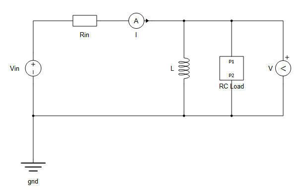

Schematic Editor API¶
Module: typhoon.api.schematic_editor
Schematic API provides set of functions/methods to manipulate existing schematic models (tse files) and create new ones from scratch programmaticaly. This is most commonly used for creating scripts for testing and automating repetitive tasks, but its use is not restricted for these use cases only.
Examples¶
Following two examples illustrates how you can use Typhoon Schematic Editor API.
Example 1¶
This example illustrates creating model from scratch, saving it and compiling it as a last step.
import os
from typhoon.api.schematic_editor import SchematicAPI
sys.path.insert(0, os.path.split(os.path.abspath(os.path.join(os.path.realpath(__file__), '..','..', '..','..')))[0])
# Create SchematicAPI object
model = SchematicAPI()
# Create new model
model.create_new_model()
# Starting coordinates
x0 = 8192
y0 = 8192
# Component values
r_in_value = 100.0
l_value = 1e-5
r_value = 0.1
c_value = 5e-4
print("Creating scheme items...")
# Create Voltage Source component
v_in = model.create_component(
"core/Voltage Source",
name="Vin",
position=(x0-300, y0),
rotation="right"
)
# Create Resistor component
r_in = model.create_component(
"core/Resistor",
name="Rin",
position=(x0-200, y0-100)
)
# Create Current Measurement component
i_meas = model.create_component(
"core/Current Measurement",
name="I",
position=(x0-100, y0-100)
)
# Create Ground component
gnd = model.create_component(
"core/Ground",
name="gnd",
position=(x0-300, y0+200)
)
# Create Inductor component
ind = model.create_component(
"core/Inductor",
name="L",
position=(x0, y0),
rotation="right"
)
# Create Voltage Measurement component
v_meas = model.create_component(
"core/Voltage Measurement",
name="V",
position=(x0+200, y0),
rotation="right"
)
# Create RC Load Subsystem component
rc_load = model.create_component(
"core/Empty Subsystem",
name="RC Load",
position=(x0+100, y0),
)
# Create port in Subsystem
p1 = model.create_port(
name="P1",
parent=rc_load,
terminal_position=("top", "auto"),
rotation="right",
position=(x0, y0-200)
)
# Create port in Subsystem
p2 = model.create_port(
name="P2",
parent=rc_load,
terminal_position=("bottom", "auto"),
rotation="left",
position=(x0, y0+200)
)
# Create Resistor component
r = model.create_component(
"core/Resistor",
parent=rc_load,
name="R",
position=(x0, y0-50),
rotation="right"
)
# Create Capacitor component
c = model.create_component(
"core/Capacitor",
parent=rc_load,
name="C",
position=(x0, y0+50),
rotation="right"
)
# Create necessary junctions
junction1 = model.create_junction(
name="J1",
position=(x0-300, y0+100),
)
junction2 = model.create_junction(
name="J2",
position=(x0, y0-100),
)
junction3 = model.create_junction(
name="J3",
position=(x0, y0+100),
)
junction4 = model.create_junction(
name="J4",
position=(x0+100, y0-100),
)
junction5 = model.create_junction(
name="J5",
position=(x0+100, y0+100),
)
# Connect all the components
print("Connecting components...")
model.create_connection(model.term(v_in, "p_node"), model.term(r_in, "p_node"))
model.create_connection(model.term(v_in, "n_node"), junction1)
model.create_connection(model.term(gnd, "node"), junction1)
model.create_connection(model.term(r_in, "n_node"), model.term(i_meas, "p_node"))
model.create_connection(model.term(i_meas, "n_node"), junction2)
model.create_connection(junction2, model.term(ind, "p_node"))
model.create_connection(model.term(ind, "n_node"), junction3)
model.create_connection(junction1, junction3)
model.create_connection(junction2, junction4)
model.create_connection(junction3, junction5)
model.create_connection(model.term(rc_load, "P1"), junction4)
model.create_connection(junction5, model.term(rc_load, "P2"))
model.create_connection(junction4, model.term(v_meas, "p_node"))
model.create_connection(model.term(v_meas, "n_node"), junction5)
model.create_connection(p1, model.term(r, "p_node"))
model.create_connection(model.term(r, "n_node"), model.term(c, "p_node"))
model.create_connection(model.term(c, "n_node"), p2)
# Set component parameters
print("Setting component properties...")
model.set_property_value(model.prop(r_in, "resistance"), r_in_value)
model.set_property_value(model.prop(ind, "inductance"), l_value)
model.set_property_value(model.prop(r, "resistance"), r_value)
model.set_property_value(model.prop(c, "capacitance"), c_value)
# Save the model
file_name = "RLC_example.tse"
print(f"Saving model to '{file_name}'...")
model.save_as(file_name)
# Compile model
if model.compile():
print("Model successfully compiled.")
else:
print("Model failed to compile")
# Close the model
model.close_model()
Script output:
Creating scheme items...
Connecting components...
Setting component properties...
Saving model to 'RLC_example.tse'...
Model successfully compiled.
After executing this script, model is saved in a file “RLC_example.tse in directory where script is located.
Following image shows how model looks like if opened in Typhoon Schematic Editor.

Example 2¶
This example ilustrates loading an existing model (created in previous example) and modyfing it, saving changes and compiling it as a last step.
import os
from typhoon.api.schematic_editor import SchematicAPI
sys.path.insert(0, os.path.split(os.path.abspath(os.path.join(os.path.realpath(__file__), '..','..', '..','..')))[0])
# Create SchematicAPI object
model = SchematicAPI()
# Load the model from file
print("Loading model...")
model.load("RLC_example.tse")
# Starting coordinates
x0 = 8192
y0 = 8192
print("Modifying model...")
# Get the handler for Rin component
r_in = model.get_item("Rin", item_type="component")
if r_in:
# Delete the component
model.delete_item(r_in)
# Get the handler for I component
i_meas = model.get_item("I", item_type="component")
if i_meas:
# Delete the component
model.delete_item(i_meas)
# Create a contactor component
switch = model.create_component(
"core/Single Pole Single Throw Contactor",
name="SW",
position=(x0-200, y0-100)
)
# Get the component handlers to create connections with the contactor
v_in = model.get_item("Vin", item_type="component")
junction = model.get_item("J2", item_type="junction")
# Create the connections
model.create_connection(model.term(v_in, "p_node"), model.term(switch, "a_in"))
model.create_connection(model.term(switch, "a_out"), junction)
# Get the handler for RC Load subsystem
rc_load = model.get_item("RC Load", item_type="component")
# Get the handler for R component inside the RC Load subsystem
r = model.get_item("R", parent=rc_load, item_type="component")
# Read and change the resistor value of R component
old_r_value = model.get_property_value(model.prop(r, "resistance"))
new_r_value = old_r_value * 10
model.set_property_value(model.prop(r, "resistance"), new_r_value)
# Save the model
print("Saving model...")
model.save()
# Compile model
if model.compile():
print("Model successfully compiled.")
else:
print("Model failed to compile")
# Close the model
model.close_model()
Script output:
Loading model...
Modifying model...
Saving model...
Model successfully compiled.
Schematic API constants¶
Module: typhoon.api.schematic_editor.const
Various Schematic API method expects predefined constants for some of their parameters.
Below is a listing (Python module) of all constants which are used in Schematic API methods.
# This file is a part of Typhoon HIL API library.
#
# Typhoon HIL API is free software: you can redistribute it and/or modify
# it under the terms of the GNU Lesser General Public License as published by
# the Free Software Foundation, either version 3 of the License, or
# (at your option) any later version.
#
# This program is distributed in the hope that it will be useful,
# but WITHOUT ANY WARRANTY; without even the implied warranty of
# MERCHANTABILITY or FITNESS FOR A PARTICULAR PURPOSE. See the
# GNU Lesser General Public License for more details.
#
# You should have received a copy of the GNU Lesser General Public License
# along with this program. If not, see <http://www.gnu.org/licenses/>.
#
# Icon rotate behavior constants.
ICON_ROTATE = "rotate"
ICON_NO_ROTATE = "no_rotate"
ICON_TEXT_LIKE = "text_like"
# Fully qualified name separator
FQN_SEP = "."
# Signal types
SIG_TYPE_ANALOG = "analog"
SIG_TYPE_DIGITAL = "digital"
# Signal processing type constants.
SP_TYPE_INHERIT = "inherit"
SP_TYPE_INT = "int"
SP_TYPE_UINT = "uint"
SP_TYPE_REAL = "real"
# Kind constants.
KIND_SP = "sp"
KIND_PE = "pe"
# Direction constants.
DIRECTION_IN = "in"
DIRECTION_OUT = "out"
# Constants for specifying rotation.
ROTATION_DOWN = "down"
ROTATION_UP = "up"
ROTATION_LEFT = "left"
ROTATION_RIGHT = "right"
# Constants for specifying tag scopes.
TAG_SCOPE_LOCAL = "local"
TAG_SCOPE_GLOBAL = "global"
TAG_SCOPE_MASKED_SUBSYSTEM = "masked_subsystem"
# Constant for ItemHandle type
ITEM_HANDLE = "item_handle"
# Constant for DataFrame type
DATA_FRAME = "data_frame"
# Flip constants.
FLIP_NONE = "flip_none"
FLIP_HORIZONTAL = "flip_horizontal"
FLIP_VERTICAL = "flip_vertical"
FLIP_BOTH = "flip_both"
# Constants used for specifying item types.
ITEM_ANY = "unknown"
ITEM_COMPONENT = "component"
ITEM_MASKED_COMPONENT = "masked_component"
ITEM_MASK = "mask"
ITEM_CONNECTION = "connection"
ITEM_TAG = "tag"
ITEM_PORT = "port"
ITEM_COMMENT = "comment"
ITEM_JUNCTION = "junction"
ITEM_TERMINAL = "terminal"
ITEM_PROPERTY = "property"
ITEM_SIGNAL = "signal"
ITEM_SIGNAL_REF = "signal_ref"
ITEM_SCHEME_AREA = "scheme_area"
# Constants used for specifying kind of error and/or warning.
ERROR_GENERAL = "General error"
ERROR_PROPERTY_VALUE_INVALID = "Invalid property value"
WARNING_GENERAL = "General warning"
# Constants used for specifying simulation method.
SIM_METHOD_EXACT = "exact"
SIM_METHOD_EULER = "euler"
SIM_METHOD_TRAPEZOIDAL = "trapezoidal"
GRID_RESOLUTION = 4
COMPONENT_SIZE_GRID_RESOLUTION = 2 * GRID_RESOLUTION
# Constants for handler names.
HANDLER_MODEL_INIT = "model_init"
HANDLER_MODEL_LOADED = "model_loaded"
HANDLER_OPEN = "open"
HANDLER_INIT = "init"
HANDLER_MASK_INIT = "mask_init"
HANDLER_CONFIGURATION_CHANGED = "configuration_changed"
HANDLER_PRE_COMPILE = "pre_compile"
HANDLER_BEFORE_CHANGE = "before_change"
HANDLER_PRE_VALIDATE = "pre_validate"
HANDLER_ON_DIALOG_OPEN = "on_dialog_open"
HANDLER_ON_DIALOG_CLOSE = "on_dialog_close"
HANDLER_CALC_TYPE = "calc_type"
HANDLER_CALC_DIMENSION = "calc_dimension"
HANDLER_BUTTON_CLICKED = "button_clicked"
HANDLER_DEFINE_ICON = "define_icon"
HANDLER_POST_RESOLVE = "post_resolve"
HANDLER_PRE_COPY = "pre_copy"
HANDLER_POST_COPY = "post_copy"
HANDLER_PRE_PASTE = "pre_paste"
HANDLER_POST_PASTE = "post_paste"
HANDLER_PRE_DELETE = "pre_delete"
HANDLER_POST_DELETE = "post_delete"
HANDLER_NAME_CHANGED = "name_changed"
HANDLER_POST_C_CODE_EXPORT = "post_c_code_export"
HANDLER_MASK_PRE_COMPILE = "mask_pre_cmpl"
HANDLER_PROPERTY_VALUE_CHANGED = "property_value_changed"
HANDLER_PROPERTY_VALUE_EDITED = "property_value_edited"
#
# Utility constants which are used with handlers.
#
#
# These REASON_CLOSE_* further explains how dialog is closing in context
# of ON_DIALOG_CLOSE handler.
#
REASON_CLOSE_OK = "reason_close_ok"
REASON_CLOSE_CANCEL = "reason_close_cancel"
# Constants for specifying widget types.
# One exception is file chooser widget which must be
# specified by string value "file_chooser *.ext", where *.ext
# specifies desired file extension.
#
WIDGET_COMBO = "combo"
WIDGET_EDIT = "edit"
WIDGET_CHECKBOX = "checkbox"
WIDGET_BUTTON = "button"
WIDGET_TOGGLE_BUTTON = "togglebutton"
WIDGET_SIGNAL_CHOOSER = "signal_chooser"
WIDGET_SIGNAL_ACCESS = "signal_access"
#
# For file chooser widget, there is no constant but direct string is used
# as this widget type is parametrized with extension, so for example to specify
# file chooser for extension *.dll and *.so, string will be:
# file_chooser '*.dll *.so'
#
WIDGET_EDIT_MAX_LENGTH = 2**31 - 1
#
# Constants used to determine how hierarchy traversal is performed in context
# of various functions which traverse model.
#
RECURSE_INTO_LINKED_COMPS = "recurse_linked_components"
# Constants for representing contexts (be it real time or typhoon sim)
CONTEXT_REAL_TIME = "real_time"
CONTEXT_TYPHOONSIM = "typhoonsim"
Positioning¶
Schematic scene coordinate system origin (0, 0) is in the top left corner of whole scene. Schematic scene size is 16k pixels (16384), so scheme scene center point will (8192, 8192).
Schematic model configuration¶
Schematic model configuration is manipulated with get_model_property_value
and set_model_property_value methods.
See API references section for detailed description of these two functions.
API references¶
- class SchematicAPI(*args, **kwargs)¶
Class models schematic model and provide methods to manipulate schematic model.
- add_library_path(library_path, add_subdirs=False, persist=False)¶
Add path where library files are located (to the library search path). Addition of library path is temporary (process which calls this function will see change but after it’s finished added path will not be saved).
- Parameters:
library_path (str) – Directory path where library files are located.
add_subdirs (bool) – Search in subdirectories for library files.
persist (bool) – Make library path change permanent.
- Returns:
None
Example:
# # Demonstrate use of {add,remove}_library_path and reload_library functions. # # All the path operations are temporary for the current running session. # from typhoon.api.schematic_editor import SchematicAPI mdl = SchematicAPI() mdl.create_new_model() # # Library file is located in directory 'custom_lib' one level above this # example file. # directory, __ = os.path.split(os.path.realpath(__file__)) lib_path = os.path.join(directory, "custom_lib") # Get all current library paths and remove them old_paths = mdl.get_library_paths() for path in old_paths: mdl.remove_library_path(path) # Add library path and reload library to be able to use added library. mdl.add_library_path(lib_path) mdl.reload_libraries() # Create components from loaded libraries. comp = mdl.create_component("my_lib/CustomComponent") print("Component is '{0}'.".format(comp)) comp2 = mdl.create_component("archived_user_lib/CustomComponent1") print("Second component (from archived library) is '{0}'.".format( comp2 )) # Remove library from the path. mdl.remove_library_path(lib_path) # Add again the previous library paths for path in old_paths: mdl.add_library_path(path) mdl.close_model()
Output
Component is 'masked_component: CustomComponent1'. Second component (from archived library) is 'component: CustomComponent11'.
- bypass_component(item_handle)¶
Disables a component and bypasses its terminals if their number is the same on opposite sides.
- Returns:
None
Example:
# # Demonstrates the use of the bypass_component and is_bypassed functions. # from typhoon.api.schematic_editor import SchematicAPI mdl = SchematicAPI() # Create new model mdl.create_new_model() # Starting coordinates x0 = 8192 y0 = 8192 print("Creating scheme items...") # Create Voltage Source component v_in = mdl.create_component( "core/Voltage Source", name="Vin", position=(x0 - 300, y0), rotation="right" ) mdl.set_property_value(mdl.prop(v_in, "init_rms_value"), 100) # Create Resistor component r_1 = mdl.create_component( "core/Resistor", name="R1", position=(x0 - 200, y0 - 100) ) mdl.set_property_value(mdl.prop(r_1, "resistance"), 50) # Create Resistor component r_2 = mdl.create_component( "core/Resistor", name="R2", position=(x0 - 100, y0 - 100) ) mdl.set_property_value(mdl.prop(r_2, "resistance"), 50) i_meas = mdl.create_component( "core/Current Measurement", name="I", position=(x0, y0), rotation="right" ) mdl.create_connection(mdl.term(v_in, "p_node"), mdl.term(r_1, "p_node")) mdl.create_connection(mdl.term(r_1, "n_node"), mdl.term(r_2, "p_node")) mdl.create_connection(mdl.term(r_2, "n_node"), mdl.term(i_meas, "p_node")) mdl.create_connection(mdl.term(i_meas, "n_node"), mdl.term(v_in, "n_node")) print("Initial bypass status:") print(f"{mdl.is_bypassed(r_1)=}") mdl.bypass_component(r_1) print("After bypassing component R1:") print(f"{mdl.is_bypassed(r_1)=}") mdl.enable_items(r_1) print("Disabling or enabling a component removes its bypass. After enabling:") print(f"{mdl.is_bypassed(r_1)=}") mdl.close_model()
Output
Creating scheme items... Initial bypass status: mdl.is_bypassed(r_1)=False After bypassing component R1: mdl.is_bypassed(r_1)=True Disabling or enabling a component removes its bypass. After enabling: mdl.is_bypassed(r_1)=False
- close_model()¶
Closes model.
- Parameters:
None
- Returns:
None
Example:
# # Demonstrate use of create_model() and close_model(). # from typhoon.api.schematic_editor import SchematicAPI mdl = SchematicAPI() mdl.create_new_model(name="MyModel") mdl.create_component(type_name="core/Resistor") mdl.close_model()
Output
- compile(conditional_compile=False)¶
Compile schematic model. If conditional_compile is set to True, and if model, together with its dependencies is unchanged, compilation won’t be performed. Model dependencies are specified using set_model_dependencies Schematic API function.
Note
This function cannot be used in handlers.
- Parameters:
conditional_compile (bool) – When true, compilation should be skipped if model is unchanged
- Returns:
Trueif compilation was successful,Falseotherwise.
Example:
# # Demonstrate use of compile function. # from typhoon.api.schematic_editor import SchematicAPI mdl = SchematicAPI() mdl.create_new_model() volt_src = mdl.create_component("core/Voltage Source") c = mdl.create_component("core/Capacitor", name="C1") r = mdl.create_component("core/Resistor", name="R1") con1 = mdl.create_connection(mdl.term(volt_src, "p_node"), mdl.term(r, "p_node")) con2 = mdl.create_connection(mdl.term(r, "n_node"), mdl.term(c, "p_node")) con3 = mdl.create_connection(mdl.term(volt_src, "n_node"), mdl.term(c, "n_node")) # Save model mdl.save_as("model.tse") # Load and compile model mdl.load("model.tse") mdl.compile() mdl.close_model()
Output
- create_c_library(source_files, compiler_options=None, platform='HIL', library_type='static', output_lib_path=None)¶
Creates a static library file from provided source files.
- Parameters:
source_files (list) – list of source files
compiler_options (dictionary) – additional parameters for compiling process
platform (str) – what device will the library be used (HIL, Windows, Linux)
library_type (str) – type of library to be created (static or dynamic)
output_lib_path (str) – path where the static library will be saved. If the argument is not specified, the file will be saved at the same path as the source files.
- Returns:
None
- create_comment(text, parent=None, name=None, position=None)¶
Create comment with provided text inside the container component specified by parent.
- Parameters:
text (str) – Comment text.
parent (ItemHandle) – Parent component handle.
name (str) – Comment’s name.
position (sequence) – X and Y coordinates of tag in the container.
- Returns:
Handle for created comment.
- Raises:
SchApiException in case when connection creation fails. –
Example:
# # Demonstrate use of create_comment function. # from typhoon.api.schematic_editor import SchematicAPI mdl = SchematicAPI() mdl.create_new_model() # Create commment with some text comment1 = mdl.create_comment("This is a comment") # # Create comment with text, custom name, and specified position # in scheme. # comment2 = mdl.create_comment("This is a comment 2", name="Comment 2", position=(100, 200)) print("Comment is {0}.".format(comment2)) mdl.close_model()
Output
Comment is comment: Comment 2.
- create_component(type_name, parent=None, name=None, rotation='up', flip='flip_none', position=None, size=(None, None), hide_name=False, require='', visible='', layout='dynamic', context_typhoonsim=None, context_real_time=None)¶
Creates component using provided type name inside the container component specified by parent. If parent is not specified top level parent (scheme) will be used as parent.
Parameters
rotationandflipexpects respective constants as value (See Schematic API constants).- Parameters:
type_name (str) – Component type name, specifies which component to create.
parent (ItemHandle) – Container component handle.
name (str) – Component name.
rotation (str) – Rotation of the component.
flip (str) – Flip state of the component.
position (sequence) – X and Y coordinates of component.
size (sequence) – Width and height of component.
hide_name (bool) – component name will be hidden if this flag is set to True.
require (str) – Specify require string, that is, on which toolbox this property relies. Ignored for library components.
visible (str) – Specify visible string, that is, on which toolbox this property relies. Ignored for library components.
layout (str) – Specify layout string, which can be static or dynamic. Ignored for library components.
context_typhoonsim (dict) – Context dict for typhoonsim context. It can contain given keys: require (str), visible (str), nonsupported(bool), nonvisible(bool), ignored(bool) and allowed_values(tuple).
context_real_time (dict) – Context dict for typhoonsim context. It can contain given keys: require (str), visible (str), nonsupported(bool), nonvisible(bool), ignored(bool) and allowed_values(tuple).
- Returns:
Handle for created component.
- Raises:
SchApiException in case when component creation fails. –
Example:
# # Demonstrate use of create_component function. # from typhoon.api.schematic_editor import SchematicAPI mdl = SchematicAPI() mdl.create_new_model() # Create component at the top level scheme. r = mdl.create_component(type_name="core/Resistor", name="R1") # Create subsystem component at the top level. sub1 = mdl.create_component("core/Subsystem", name="Subsystem 1") # Create inductor component inside previosuly created subsystem component. inner_l = mdl.create_component(type_name="core/Inductor", parent=sub1, name="Inner inductor") mdl.close_model()
Output
- create_connection(start, end, name=None, breakpoints=None)¶
Create connection with specified start and end connectable handles. ConnectableMixin can be component terminal, junction, port or tag.
Note
Both start and end must be of same kind and they both must be located in same parent.
- Parameters:
start (ItemHandle) – Handle for connection start.
end (ItemHandle) – Handle for connection end.
name (str) – Connection name.
breakpoints (list) – List of coordinate tuples (x, y), used to represent connection breakpoints.
- Returns:
Handle for created connection.
- Raises:
SchApiException in case when connection creation fails. –
SchApiDuplicateConnectionException in case when provided –
connectables is already connected. –
Example:
# # Demonstrate use of create_connection function. # from typhoon.api.schematic_editor import SchematicAPI mdl = SchematicAPI() mdl.create_new_model() # # At the top level create two components, one junction and connect them. # # |r|--------bp1 # | # | # bp2----------|j|------------|l| # r = mdl.create_component("core/Resistor") j = mdl.create_junction(name="Junction 1") l = mdl.create_component("core/Inductor") con1 = mdl.create_connection(mdl.term(r, "n_node"), j, breakpoints=[(100, 200), (100, 0)]) con2 = mdl.create_connection(j, mdl.term(l, "p_node")) # # Create connection between tag and component (capacitor positive terminal # named `n_node`). # tag1 = mdl.create_tag(value="A", name="Tag 1") cap = mdl.create_component("core/Capacitor", name="Capacitor 1") con3 = mdl.create_connection(tag1, mdl.term(cap, "n_node")) # # Create subsystem and inside one port and one component # and connect them. # sub1 = mdl.create_component("core/Subsystem", name="Subsystem 1") port1 = mdl.create_port(name="Port 1", parent=sub1) super_cap = mdl.create_component("core/Super Capacitor", name="Super cap 1", parent=sub1) con4 = mdl.create_connection(start=port1, end=mdl.term(super_cap, "p_node"), name="Inner connection") print(con4) mdl.close_model()
Output
connection: Subsystem 1.Inner connection
- create_junction(name=None, parent=None, kind='pe', position=None)¶
Create junction inside container component specified by parent.
Parameter
kindexpects respective constants as value (See Schematic API constants).- Parameters:
name (str) – Junction name.
parent (ItemHandle) – Container component handle.
kind (str) – Kind of junction (can be signal processing or power electronic kind)
position (sequence) – X and Y coordinates of junction in the container.
- Returns:
Handle for created junction.
- Raises:
SchApiException in case when junction creation fails. –
Example:
# # Demonstrate use of create_junction function. # from typhoon.api.schematic_editor import SchematicAPI from typhoon.api.schematic_editor import const mdl = SchematicAPI() mdl.create_new_model() # Create junction with specified name. j = mdl.create_junction(name="Junction 1") print(j) # Create junction inside subsystem with SP (Signal processing kind). sub1 = mdl.create_component("core/Subsystem") j2 = mdl.create_junction(name="Junction 2", kind=const.KIND_SP) print(j2) mdl.close_model()
Output
junction: Junction 1 junction: Junction 2
- create_library_model(lib_name, file_name)¶
Creates new library (.tlib) model.
- Parameters:
lib_name (str) – Actual library name
file_name (str) – The name of the file
- Returns:
None
Example:
# # Demonstrate use of create_library_model function. # from typhoon.api.schematic_editor import SchematicAPI mdl = SchematicAPI() file_path = os.path.join( os.path.dirname(os.path.realpath(__file__)), "create_library_model_lib", "example_library.tlib" ) lib_name = "Example Library" mdl.create_library_model( lib_name, file_path ) # # Create basic components, connect them and add them to the library # r = mdl.create_component("core/Resistor", name="R1") c = mdl.create_component("core/Capacitor", name="C1") con = mdl.create_connection(mdl.term(c, "n_node"), mdl.term(r, "p_node")) con1 = mdl.create_connection(mdl.term(c, "p_node"), mdl.term(r, "n_node")) # # Save the library, load it and try saving the loaded library # if not os.path.exists(file_path): os.makedirs(os.path.dirname(file_path)) mdl.save_as(file_path) mdl.load(file_path) mdl.save()
Output
- create_mask(item_handle)¶
Create a mask on item specified by
item_handle.- Parameters:
item_handle (ItemHandle) – ItemHandle object.
- Returns:
Mask handle object.
- Raises:
SchApiException if item doesn't support mask creation (on it) or –
item_handle is invalid. –
SchApiItemNotFoundException when item can't be found. –
Example:
# # Demonstrate use of create_mask function. # from typhoon.api.schematic_editor import SchematicAPI mdl = SchematicAPI() mdl.create_new_model() sub = mdl.create_component("core/Subsystem", name="Subsystem 1") mask = mdl.create_mask(sub) print("Created mask is: '{0}'.".format(mask)) mdl.close_model()
Output
Created mask is: 'mask: Subsystem 1.Mask@top'.
- create_new_model(name=None)¶
Creates new model.
- Parameters:
name (str) – Optional model name, if not specified it will be automatically generated.
- Returns:
None
Example:
# # Demonstrate use of create_model() and close_model(). # from typhoon.api.schematic_editor import SchematicAPI mdl = SchematicAPI() mdl.create_new_model(name="MyModel") mdl.create_component(type_name="core/Resistor") mdl.close_model()
Output
- create_port(name=None, parent=None, label=None, kind='pe', direction='out', dimension=(1,), sp_type='real', terminal_position=('left', 'auto'), rotation='up', flip='flip_none', hide_name=False, position=None)¶
Create port inside the container component specified by parent.
Parameters
kind,direction,sp_type and,rotationandflipexpects respective constants as values. (See Schematic API constants).- Parameters:
name (str) – Port name.
parent (ItemHandle) – Container component handle.
label (str) – Optional label to use as a terminal name instead of port name.
kind (str) – Port kind (signal processing or power electronic kind).
direction (str) – Port direction (applicable only for signal processing ports)
dimension (tuple) – Specify dimension.
sp_type (str) – SP type for port.
terminal_position (tuple) – Specify position of port based terminal on component.
rotation (str) – Rotation of the port.
flip (str) – Flip state of the port.
hide_name (bool) – Indicate if label for terminal (created on component as a result of this port) should be hidden.
position (sequence) – X and Y coordinates of port.
- Returns:
Handle for created port.
- Raises:
SchApiException in case port creation fails (for example when –
port is created at the top level parent or any other cause of –
error). –
Example:
# # Demonstrate create_port function. # from typhoon.api.schematic_editor import SchematicAPI mdl = SchematicAPI() mdl.create_new_model() # # Port can't be created at the top level scheme (exception will be raised), # so we need first to create subsystem in which port will be created. # sub1 = mdl.create_component(type_name="core/Subsystem", name="Subsystem 1") port1 = mdl.create_port(parent=sub1, name="Port 1", dimension=(2,)) print(port1) mdl.close_model()
Output
port: Subsystem 1.Port 1
- create_property(item_handle, name, label='', widget='edit', combo_values=(), evaluate=True, enabled=True, supported=True, visible=True, serializable=True, tab_name='', unit='', button_label='', previous_names=(), description='', require='', type='', default_value=None, min_value=None, max_value=None, keepline=False, ignored=False, skip=None, skip_step=None, section=None, vector=False, tunable=False, index=None, allowed_values=None, context_typhoonsim=None, context_real_time=None)¶
Create property on item specified by
item_handle.Parameter
property_widgetexpects constants as value. (See Schematic API constants).- Parameters:
item_handle (ItemHandle) – ItemHandle object.
name (str) – Name of property.
label (str) – Optional label for property.
widget (str) – String constant, specifies which type of GUI widget will represent property.
combo_values (tuple) – When widget is set to WIDGET_COMBO, this parameter specifies allowed combo values.
evaluate (bool) – Specify if property will be evaluated.
enabled (bool) – Specify if this property is enabled (grayed out or not on GUI).
supported (bool) – Specify if property is supported.
visible (bool) – Specify if property will be visible.
serializable (bool) – Specify if property will be included during serialization to json.
tab_name – (str): Optional name for tab where property will be displayed (on GUI). You can specify the order in which tabs should be displayed with the format “tab_name:number” (ex: “Model:2”).
unit (str) – Optional unit for property.
button_label (str) – Defines label if property widget is button.
previous_names (tuple) – Tuple containing previous names of the property.
description (str) – Description for the property.
require (str) – Specify require string, that is, on which toolbox this property relies.
type (str) – Type of the property. (noqa: A002)
default_value – Default value for the property.
min_value – Minimum value for the property.
max_value – Maximum value for the property.
keepline (bool) – Specify if the property should keep its line in the GUI.
ignored (bool) – Specify if the property is ignored.
skip (str) – Specify if the property should be skipped.
skip_step – Specify the step to skip.
section – The section of this property within a tab.
vector (bool) – Specify if the property is a vector.
tunable (bool) – Specify if the property is tunable.
index (int) – Specify index (position) of new property in a list of all properties. Property position is 0 index based. If index is negative, property will be placed on 0th position. Otherwise, if index is larger than last index, property index will be set after the last one.
allowed_values (tuple) – Tuple of allowed values for the property. If current value is among allowed, require string won’t be evaluated during validation.
context_typhoonsim (dict) – Context dict for typhoonsim context. It can contain given keys: require (str), visible (str), nonsupported(bool), nonvisible(bool), ignored(bool) and allowed_values(tuple).
context_real_time (dict) – Context dict for typhoonsim context. It can contain given keys: require (str), visible (str), nonsupported(bool), nonvisible(bool), ignored(bool) and allowed_values(tuple).
- Returns:
Property handle for newly created property.
- Raises:
SchApiItemNotFound if item can't be found. –
SchApiException if item handle is invalid, item handle doesn't –
support property creation on it. –
SchApiItemNameExistsException if property with same name already –
exists. –
Example:
# # Demonstrate use of create_property and remove_property function. # from typhoon.api.schematic_editor import SchematicAPI from typhoon.api.schematic_editor import const mdl = SchematicAPI() mdl.create_new_model() # Create subsystem component. sub = mdl.create_component("core/Subsystem", name="Sub1") # Create mask on subsystem 'Sub1' mask = mdl.create_mask(sub) # Create two properties on mask. prop1 = mdl.create_property( mask, name="prop_1", label="Property 1", widget=const.WIDGET_COMBO, combo_values=("Choice 1", "Choice 2", "Choice 3"), tab_name="First tab" ) prop2 = mdl.create_property( mask, name="prop_2", label="Property 2", widget=const.WIDGET_BUTTON, tab_name="Second tab" ) # Remove prop2. mdl.remove_property(mask, "prop_2") mdl.close_model()
Output
- create_tag(value, name=None, parent=None, scope='global', kind='pe', direction=None, rotation='up', flip='flip_none', position=None, hide_name=False)¶
Create tag inside container component specified by parent handle..
Parameters
scope,kind,direction,rotationexpects respective constants as values (See Schematic API constants).- Parameters:
value (str) – Tag value, used to match with other tags.
name (str) – Tag name.
parent (ItemHandle) – Container component handle.
scope (str) – Tag scope, specifies scope in which matching tag is searched.
kind (str) – Kind of tag (can be either KIND_SP or KIND_PE).
direction (str) – Tag direction (for signal processing tags). When signal processing tag is created, this parameter will get a value of DIRECTION_IN if no value was provided.
rotation (str) – Rotation of the tag, can be one of following: ROTATION_UP, ROTATION_DOWN, ROTATION_LEFT and ROTATION_RIGHT.
flip (str) – Flip state of the tag.
position (sequence) – X and Y coordinates of tag in the container.
hide_name (bool) – tag name will be hidden if this flag is set to True.
- Returns:
Handle for created tag.
- Raises:
SchApiException in case when tag creation fails. –
Example:
# # Demonstrate use of create_tag function. # from typhoon.api.schematic_editor import SchematicAPI from typhoon.api.schematic_editor import const mdl = SchematicAPI() mdl.create_new_model() # Create tag with specified value and name. tag1 = mdl.create_tag(value="A", name="Tag 1") # Create second tag in subsystem, with custom scope, kind and direction. sub1 = mdl.create_component("core/Subsystem") tag2 = mdl.create_tag(parent=sub1, value="B", name="Tag 2", scope=const.TAG_SCOPE_LOCAL, kind=const.KIND_SP, direction=const.DIRECTION_OUT) mdl.close_model()
Output
- delete_item(item_handle)¶
Delete item named specified by
item_handle.- Parameters:
item_handle (ItemHandle) – Item handle.
- Returns:
None
- Raises:
SchApiException in case when deletion fails. –
Example:
# # Demonstrate use of delete_item function. # from typhoon.api.schematic_editor import SchematicAPI mdl = SchematicAPI() mdl.create_new_model() # Create some items and then delete them. r = mdl.create_component("core/Resistor") j = mdl.create_junction() tag = mdl.create_tag(value="Val 1") sub1 = mdl.create_component("core/Subsystem") inner_port = mdl.create_port(parent=sub1, name="Inner port1") # # Delete items # mdl.delete_item(r) mdl.delete_item(j) mdl.delete_item(tag) # Delete subsystem mdl.delete_item(sub1) mdl.close_model()
Output
- detect_hw_settings()¶
Detect and set hardware settings by querying hardware device.
Note
This function cannot be used in handlers.
- Args:
None
- Returns:
tuple (hw_product_name, hw_revision, configuration_id) or
Falseif auto-detection failed.
Example:
# # Demonstrate use of detect_hw_settings function. # from typhoon.api.schematic_editor import SchematicAPI mdl = SchematicAPI() mdl.create_new_model() hw_sett = mdl.detect_hw_settings() if hw_sett: print("HIL device was detected and model " "configuration was changed to {0}.".format(hw_sett)) else: print("HIL device autodetection failed, maybe HIL device is not connected.") mdl.close_model()
- disable_items(item_handles)¶
Disables items using the provided
item_handles.- Parameters:
item_handles (iterable) – Iterable over scheme items to be disabled.
- Returns:
List of items affected by the operation.
Example:
# # Demonstrate the use of the following functions: # enable_items, disable_items, is_enabled # from typhoon.api.schematic_editor import SchematicAPI mdl = SchematicAPI() model_path = os.path.join( os.path.dirname(os.path.realpath(__file__)), "enable_disable", "3050_enable_disable_items.tse" ) mdl.load(model_path) # # Names of items that can be disabled # item_disable_names = [ "AI_1", "AI_2", "SM_1", "Probe1", ] # # Names of subsystem [0] and item [1] inside subsystem for # example when an item inside a subsystem is disabled # subsystem_get_item_example = ["SS_1", "SM_6"] # # Names of items that cannot be disabled # # These are not the only items that cannot be disabled ... just an # example item_dont_disable_names = [ "Subsystem1", "SM_5", "Min Max 1", "GA_2" ] # # Fetch all items that can be disabled and that cannot be disabled # items_disable = [] items_dont_disable = [] for item_name in item_disable_names: items_disable.append(mdl.get_item(item_name)) for item_name in item_dont_disable_names: items_dont_disable.append(mdl.get_item(item_name)) # # Disable, compile, enable - items that can be disabled # disabled_items = mdl.disable_items(items_disable) mdl.compile() affected_items = mdl.enable_items(items_disable) mdl.compile() # # Disable, compile, enable - items that can not be disabled # disabled_items = mdl.disable_items(items_dont_disable) try: mdl.compile() except Exception as e: print(e.args) affected_items = mdl.enable_items(items_dont_disable) mdl.compile() # # Disable, compile, enable - items inside subsystem # parent_item = mdl.get_item(subsystem_get_item_example[0]) concrete_item = mdl.get_item(subsystem_get_item_example[1], parent_item) disabled_items = mdl.disable_items([concrete_item]) try: mdl.compile() except Exception as e: print(e.args) affected_items = mdl.enable_items(concrete_item) mdl.compile() mdl.close_model()
Output
Compile process terminated due to error(s): Compiling process finished due to errors. Compile process terminated due to error(s): Compiling process finished due to errors. Component's 'SM_3' input 'in1' is not connected! Compile process terminated due to error(s): Compiling process finished due to errors. Component's 'SS_1.Probe3' input 'in' is not connected! Compile process terminated due to error(s): Compiling process finished due to errors.
- disable_property(prop_handle)¶
Sets property as non-editable.
Note
The effect of this function is visible only on the Schematic Editor’s UI.
When the property is disabled, it is not possible to change its value in the dialog. To enable property, use
enable_property()function.- Parameters:
prop_handle (ItemHandle) – Property handle.
- Returns:
None
Example:
# # Demonstrate use of disable_property, enable_property and is_property_enabled # functions. # from typhoon.api.schematic_editor import SchematicAPI mdl = SchematicAPI() mdl.create_new_model() # Create component r = mdl.create_component("core/Resistor") # Disable property mdl.disable_property(mdl.prop(r, "resistance")) # Check to see if property is enabled. print(mdl.is_property_enabled(mdl.prop(r, "resistance"))) # Enable property mdl.enable_property(mdl.prop(r, "resistance")) print(mdl.is_property_enabled(mdl.prop(r, "resistance"))) mdl.close_model()
Output
False True
- disable_property_serialization(prop_handle)¶
Disable component property serialization to json.
When this function is called, a property becomes non-serializable. That property will not be included in serialized json file (during compilation, for example). To enable property serialization, use
enable_property_serialization()function.- Parameters:
prop_handle (ItemHandle) – Property handle.
Example:
# # Example demonstrates use of disable_property_serialization, # enable_property_serialization and is_property_serializable functions. # from typhoon.api.schematic_editor import SchematicAPI mdl = SchematicAPI() mdl.create_new_model() const = mdl.create_component(type_name="core/Constant") print(mdl.is_property_serializable(mdl.prop(const, "value"))) mdl.disable_property_serialization(mdl.prop(const, "value")) print(mdl.is_property_serializable(mdl.prop(const, "value"))) mdl.enable_property_serialization(mdl.prop(const, "value")) print(mdl.is_property_serializable(mdl.prop(const, "value"))) mdl.close_model()
Output
True False True
- disp_component_icon_text(item_handle, text, rotate='text_like', size=10, relpos_x=0.5, relpos_y=0.5, trim_factor=1.0)¶
Specify text to be displayed inside icon.
- Parameters:
item_handle (ItemHandle) – Item handle object.
text (str) – Text to display.
rotate (str) – Constant specifying icon rotation behavior, (See Schematic API constants).
size (int) – Size of text.
relpos_x (float) – Center of text rectangle (on X axis).
relpos_y (float) – Center of text rectangle (on Y axis).
trim_factor (float) – Number in range (0.0 .. 1.0) which specifies at which relative width of text rectangle width to shorten text.
- Returns:
None
Example:
# # Demonstrate use of schematic API icon functions. # from typhoon.api.schematic_editor import SchematicAPI mdl = SchematicAPI() mdl.create_new_model() tr1 = mdl.create_component("core/Three Phase Two Winding Transformer") mdl.set_component_icon_image(tr1, "/path/to/image.png") # Before text is written set color to red mdl.set_color(tr1, "red") mdl.disp_component_icon_text(tr1, "Sample text") # Initiate update of component view on scene mdl.refresh_icon(tr1) mdl.close_model()
Output
- enable_items(item_handles)¶
Enable items using the provided
item_handles.- Parameters:
item_handles (iterable) – Iterable over scheme items.
- Returns:
List of items affected by the operation.
Example:
# # Demonstrate the use of the following functions: # enable_items, disable_items, is_enabled # from typhoon.api.schematic_editor import SchematicAPI mdl = SchematicAPI() model_path = os.path.join( os.path.dirname(os.path.realpath(__file__)), "enable_disable", "3050_enable_disable_items.tse" ) mdl.load(model_path) # # Names of items that can be disabled # item_disable_names = [ "AI_1", "AI_2", "SM_1", "Probe1", ] # # Names of subsystem [0] and item [1] inside subsystem for # example when an item inside a subsystem is disabled # subsystem_get_item_example = ["SS_1", "SM_6"] # # Names of items that cannot be disabled # # These are not the only items that cannot be disabled ... just an # example item_dont_disable_names = [ "Subsystem1", "SM_5", "Min Max 1", "GA_2" ] # # Fetch all items that can be disabled and that cannot be disabled # items_disable = [] items_dont_disable = [] for item_name in item_disable_names: items_disable.append(mdl.get_item(item_name)) for item_name in item_dont_disable_names: items_dont_disable.append(mdl.get_item(item_name)) # # Disable, compile, enable - items that can be disabled # disabled_items = mdl.disable_items(items_disable) mdl.compile() affected_items = mdl.enable_items(items_disable) mdl.compile() # # Disable, compile, enable - items that can not be disabled # disabled_items = mdl.disable_items(items_dont_disable) try: mdl.compile() except Exception as e: print(e.args) affected_items = mdl.enable_items(items_dont_disable) mdl.compile() # # Disable, compile, enable - items inside subsystem # parent_item = mdl.get_item(subsystem_get_item_example[0]) concrete_item = mdl.get_item(subsystem_get_item_example[1], parent_item) disabled_items = mdl.disable_items([concrete_item]) try: mdl.compile() except Exception as e: print(e.args) affected_items = mdl.enable_items(concrete_item) mdl.compile() mdl.close_model()
Output
Compile process terminated due to error(s): Compiling process finished due to errors. Compile process terminated due to error(s): Compiling process finished due to errors. Component's 'SM_3' input 'in1' is not connected! Compile process terminated due to error(s): Compiling process finished due to errors. Component's 'SS_1.Probe3' input 'in' is not connected! Compile process terminated due to error(s): Compiling process finished due to errors.
- enable_property(prop_handle)¶
Sets property as editable.
Note
The effect of this function is only visible on the Schematic Editor’s UI.
When the property is enabled, it is possible to change its value in the dialog. To disable property, use
disable_property()function.- Parameters:
prop_handle (ItemHandle) – Property handle.
- Returns:
None
Raises:
Example:
# # Demonstrate use of disable_property, enable_property and is_property_enabled # functions. # from typhoon.api.schematic_editor import SchematicAPI mdl = SchematicAPI() mdl.create_new_model() # Create component r = mdl.create_component("core/Resistor") # Disable property mdl.disable_property(mdl.prop(r, "resistance")) # Check to see if property is enabled. print(mdl.is_property_enabled(mdl.prop(r, "resistance"))) # Enable property mdl.enable_property(mdl.prop(r, "resistance")) print(mdl.is_property_enabled(mdl.prop(r, "resistance"))) mdl.close_model()
Output
False True
- enable_property_serialization(prop_handle)¶
Enable component property serialization to json.
When this function is called, a property becomes serializable. That property will be included in serialized json file (during compilation, for example). To disable property serialization, use
disable_property_serialization()function.- Parameters:
prop_handle (ItemHandle) – Property handle.
- Returns:
None
Example:
# # Example demonstrates use of disable_property_serialization, # enable_property_serialization and is_property_serializable functions. # from typhoon.api.schematic_editor import SchematicAPI mdl = SchematicAPI() mdl.create_new_model() const = mdl.create_component(type_name="core/Constant") print(mdl.is_property_serializable(mdl.prop(const, "value"))) mdl.disable_property_serialization(mdl.prop(const, "value")) print(mdl.is_property_serializable(mdl.prop(const, "value"))) mdl.enable_property_serialization(mdl.prop(const, "value")) print(mdl.is_property_serializable(mdl.prop(const, "value"))) mdl.close_model()
Output
True False True
- error(msg, kind='General error', context=None)¶
Signals some error condition.
- Parameters:
msg (str) – Message string.
kind (str) – Error kind constant.
context (ItemHandle) – Handle for context item.
- Returns:
None
Example:
# # Demonstrate use of error function. # from typhoon.api.schematic_editor import SchematicAPI mdl = SchematicAPI() mdl.create_new_model() const = mdl.create_component("core/Constant", name="Constant 1") mdl.error("Some error message about constant component", context=const) mdl.close_model()
Output
- exists(name, parent=None, item_type='unknown')¶
Checks if item named
nameis container in parent component specified byparenthandle. If parent handle is not provided root scheme is used as parent.Note
item_typeis a constant which specify which item type to look for. See Schematic API constants.- Parameters:
name (str) – Item name to check.
parent (ItemHandle) – Parent handle.
item_type (str) – Item type constant.
- Returns:
True if item with provided name exists in parent, False otherwise.
Example:
# # Demonstrate use of exists_in function. # from typhoon.api.schematic_editor import SchematicAPI from typhoon.api.schematic_editor import const mdl = SchematicAPI() mdl.create_new_model() r = mdl.create_component("core/Resistor", name="R 1") print(mdl.exists("R 1")) sub1 = mdl.create_component("core/Subsystem") inner_c = mdl.create_component("core/Capacitor", parent=sub1, name="Capacitor 1") print(mdl.exists("Capacitor 1", sub1)) # Tests existence using filtering sub2 = mdl.create_component("core/Subsystem", name="Sub 2") mdl.create_port(name="Port 2", parent=sub2) # Port creation also created terminal on Sub 2 subsystem print(mdl.exists(name="Port 2", parent=sub2, item_type=const.ITEM_TERMINAL)) mdl.close_model()
Output
True False True
- export_c_from_model(output_dir=None)¶
Exports C code from the model’s root. Performs as a shortcut for creating an empty subsystem from the root’s content, and exporting the C code from that subsystem. C code exporter is still in beta phase.
Note
This function is not recommended for use in handlers.
- Parameters:
output_dir (str) – Path to a directory where code will be exported
- Returns:
None
Example:
# # Demonstrate use of export_c_from_subsystem function. # from typhoon.api.schematic_editor import SchematicAPI from typhoon.api.schematic_editor import const mdl = SchematicAPI() mdl.create_new_model(name="export_example") # # Create components on Root # constant = mdl.create_component("core/Constant") probe1 = mdl.create_component("core/Probe") probe2 = mdl.create_component("core/Probe") subsystem = mdl.create_component("core/Empty Subsystem") # # Create ports for subsystem # sub_in = mdl.create_port(parent=subsystem, direction=const.DIRECTION_IN, kind=const.KIND_SP, name="in") sub_out = mdl.create_port(parent=subsystem, kind=const.KIND_SP, direction=const.DIRECTION_OUT, name="out") sub_out1 = mdl.create_port(parent=subsystem, kind=const.KIND_SP, direction=const.DIRECTION_OUT, name="out1") # # Create components inside subsystem # sub_sum = mdl.create_component("core/Sum", parent=subsystem) sub_const = mdl.create_component("core/Constant", parent=subsystem) sub_gain = mdl.create_component("core/Gain", parent=subsystem) sub_j = mdl.create_junction(kind=const.KIND_SP, parent=subsystem) # # Connect everything # mdl.create_connection(mdl.term(constant, "out"), mdl.term(subsystem, "in")) mdl.create_connection(sub_in, mdl.term(sub_sum, "in")) mdl.create_connection(mdl.term(sub_const, "out"), mdl.term(sub_sum, "in1")) mdl.create_connection(mdl.term(sub_sum, "out"), sub_j) mdl.create_connection(sub_j, mdl.term(sub_gain, "in")) mdl.create_connection(mdl.term(sub_gain, "out"), sub_out) mdl.create_connection(sub_j, sub_out1) mdl.create_connection(mdl.term(subsystem, "out"), mdl.term(probe1, "in")) mdl.create_connection(mdl.term(subsystem, "out1"), mdl.term(probe2, "in")) # # Export C code # output_dir = os.path.join( os.path.dirname(os.path.realpath(__file__)), "c_export" ) mdl.export_c_from_model(output_dir) mdl.close_model()
Output
- export_c_from_subsystem(comp_handle, output_dir=None)¶
Exports C code from a given subsystem. C code exporter is still in beta phase.
Note
This function is not recommended for use in handlers.
- Parameters:
comp_handle (ItemHandle) – Component item handle object.
output_dir (str) – Path to a directory where code will be exported
- Returns:
None
- Raises:
SchApiException - when some of following occurs –
Provided ItemHandle is not component. –
Component is an atomic component. –
SchApiItemNotFoundException when component can't be found. –
Example:
# # Demonstrate use of export_c_from_subsystem function. # from typhoon.api.schematic_editor import SchematicAPI from typhoon.api.schematic_editor import const mdl = SchematicAPI() mdl.create_new_model(name="export_example") # # Create components on Root # constant = mdl.create_component("core/Constant") probe1 = mdl.create_component("core/Probe") probe2 = mdl.create_component("core/Probe") subsystem = mdl.create_component("core/Empty Subsystem") # # Create ports for subsystem # sub_in = mdl.create_port(parent=subsystem, direction=const.DIRECTION_IN, kind=const.KIND_SP, name="in") sub_out = mdl.create_port(parent=subsystem, kind=const.KIND_SP, direction=const.DIRECTION_OUT, name="out") sub_out1 = mdl.create_port(parent=subsystem, kind=const.KIND_SP, direction=const.DIRECTION_OUT, name="out1") # # Create components inside subsystem # sub_sum = mdl.create_component("core/Sum", parent=subsystem) sub_const = mdl.create_component("core/Constant", parent=subsystem) sub_gain = mdl.create_component("core/Gain", parent=subsystem) sub_j = mdl.create_junction(kind=const.KIND_SP, parent=subsystem) # # Connect everything # mdl.create_connection(mdl.term(constant, "out"), mdl.term(subsystem, "in")) mdl.create_connection(sub_in, mdl.term(sub_sum, "in")) mdl.create_connection(mdl.term(sub_const, "out"), mdl.term(sub_sum, "in1")) mdl.create_connection(mdl.term(sub_sum, "out"), sub_j) mdl.create_connection(sub_j, mdl.term(sub_gain, "in")) mdl.create_connection(mdl.term(sub_gain, "out"), sub_out) mdl.create_connection(sub_j, sub_out1) mdl.create_connection(mdl.term(subsystem, "out"), mdl.term(probe1, "in")) mdl.create_connection(mdl.term(subsystem, "out1"), mdl.term(probe2, "in")) # # Export C code # output_dir = os.path.join( os.path.dirname(os.path.realpath(__file__)), "c_export" ) mdl.export_c_from_subsystem(subsystem, output_dir) mdl.close_model()
Output
- export_library(output_file, resource_paths=(), dependency_paths=(), lock_top_level_components=True, exclude_from_locking=(), encrypt_library=True, encrypt_resource_files=True, exclude_from_encryption=())¶
Exports a library to specified output file path. The core model must be a scm.core.Library object.
- Parameters:
output_file (str) – Path where to export the library (.atlib auto-appended)
resource_paths (tuple) – tuple of required resource paths for exporting this library
dependency_paths (tuple) – tuple of required dependency paths for exporting this library
lock_top_level_components (bool) – True or False
exclude_from_locking (tuple) – tuple of component fqns that will be excluded in top level component locking process
encrypt_library (bool) – True or False
encrypt_resource_files (bool) – True or False
exclude_from_encryption (tuple) – tuple of resource paths that will be excluded in encryption process
- Returns:
bool
Example:
# # Demonstrate use of export_library function. # from typhoon.api.schematic_editor import SchematicAPI mdl = SchematicAPI() directory_path = os.path.join( os.path.dirname(os.path.realpath(__file__)), "export_lib") lib_path = os.path.join(directory_path, "example_library.tlib") atlib_directory_path = os.path.join(directory_path, "export_atlib") atlib_path = os.path.join(atlib_directory_path, "export_lib") if not os.path.exists(directory_path): os.makedirs(directory_path) if not os.path.exists(atlib_directory_path): os.makedirs(atlib_directory_path) lib_name = "Example Library" mdl.create_library_model( lib_name, lib_path ) # # Create basic components, connect them and add them to the library # category = mdl.create_component("core/Category", name="CATEGORY") s1 = mdl.create_component("core/Subsystem", parent=category, name="S1") r = mdl.create_component("core/Resistor", parent=s1, name="R1") c = mdl.create_component("core/Capacitor", parent=s1, name="C1") s2 = mdl.create_component("core/Subsystem", parent=category, name="S2") s3 = mdl.create_component("core/Subsystem", parent=category, name="S3") con = mdl.create_connection(mdl.term(c, "n_node"), mdl.term(r, "p_node")) con1 = mdl.create_connection(mdl.term(c, "p_node"), mdl.term(r, "n_node")) # # Export the library with basic settings # mdl.export_library(atlib_path, resource_paths=(), lock_top_level_components=True, exclude_from_locking=["S1"], encrypt_library=True, encrypt_resource_files=True, exclude_from_encryption=())
Output
- export_model_to_json(output_dir=None, recursion_strategy=None)¶
Exports model to json representation.
- Parameters:
output_dir (str) – path to output dir folder, if no path is specified the file will be shipped to Target Files folder
recursion_strategy (str) – constant specifying the hierarchy model traversal. Constants RECURSE_* defined in ‘Schematic API constants’ are expected.
Example:
# # Demonstrate use of export_model_to_json function. # from typhoon.api.schematic_editor import SchematicAPI from typhoon.api.schematic_editor import const output_dir = os.path.join( os.path.dirname(os.path.realpath(__file__)), "export_to_json" ) # # Load model # model_path = os.path.join(output_dir, "rlc_circuit.tse") mdl = SchematicAPI() mdl.load(model_path) # # Export to json # mdl.export_model_to_json() mdl.close_model()
Output
- find_connections(connectable_handle1, connectable_handle2=None)¶
Return all connection handles which are connected to
connectable_handle1.If
connectable_handle2is also specified then return handles for shared connections (ones that are connectingconnectable_handle1andconnectable_handle2directly.- Parameters:
connectable_handle1 (ItemHandle) – ConnectableMixin handle.
connectable_handle2 (ItemHandle) – Other connectable handle.
- Returns:
List of connection handles.
- Raises:
SchApiItemNotFound if one or both connectables can't be found. –
Example:
# # Demonstrate find_connections function. # from typhoon.api.schematic_editor import SchematicAPI from typhoon.api.schematic_editor import const mdl = SchematicAPI() mdl.create_new_model() const1 = mdl.create_component("core/Constant", name="Constant 1") junction = mdl.create_junction(kind=const.KIND_SP, name="Junction 1") probe1 = mdl.create_component("core/Probe", name="Probe 1") probe2 = mdl.create_component("core/Probe", name="Probe 2") con1 = mdl.create_connection(mdl.term(const1, "out"), junction) con2 = mdl.create_connection(junction, mdl.term(probe1, "in")) con3 = mdl.create_connection(junction, mdl.term(probe2, "in")) # # find_connections called with junction as connectable will return all three # connections. # for connection_handle in mdl.find_connections(junction): print(connection_handle) # # To get only connection which connects junction and "Probe 2" # find_connections is called with second parameter specified. # print("find_connection() specified with both connectables.") for connection_handle in mdl.find_connections(junction, mdl.term(probe2, "in")): print(connection_handle) mdl.close_model()
Output
connection: Connection2 connection: Connection3 connection: Connection1 find_connection() specified with both connectables. connection: Connection3
- static fqn(*args)¶
Joins multiple provided arguments using FQN separator between them.
- Parameters:
*args – Variable number of string arguments.
- Returns:
Joined string.
Example:
# # Demonstrate use of fqn function. # from typhoon.api.schematic_editor import SchematicAPI mdl = SchematicAPI() mdl.create_new_model() parent_name = "Subsystem 1" component_name = "Resistor 1" comp_fqn = mdl.fqn(parent_name, component_name) print(comp_fqn) mdl.close_model()
Output
Subsystem 1.Resistor 1
- get_available_library_components(library_name='', context='real_time')¶
Returns iterable over available component names from library specified by
library_name.If library name is ommited, then all available libraries are searched.
- Parameters:
library_name (str) – Name of the library from which to get available
names. (component)
- Returns:
Iterable over available library component names in form “library_name/component name”.
- Raises:
SchApiException if library is explicitly specified and it –
doesn't exists. –
Example:
# # Demonstrate use of get_available_library_components. # from typhoon.api.schematic_editor import SchematicAPI mdl = SchematicAPI() mdl.create_new_model() # Get component names from all libraries. comp_names = tuple(mdl.get_available_library_components()) # Print component names from aquired names (up to 10 names). print("Some component names are (up-to 10): {0}".format(comp_names[:10])) # Try with explicitly specified library. # Determine path to the library. directory, __ = os.path.split(os.path.realpath(__file__)) lib_path = os.path.join(directory, "custom_lib") # Add library path and reload library to be able to use added library. mdl.add_library_path(lib_path) mdl.reload_libraries() # Print components from added library. comp_names2 = tuple(mdl.get_available_library_components(library_name="my_lib")) msg = "Here are some component names from specified library: {0}" print(msg.format(comp_names2[:10])) mdl.remove_library_path(lib_path) mdl.reload_libraries() mdl.close_model()
Output
Some component names are (up-to 10): ('core/Relational operator', 'core/ANPC Leg', 'core/IEEE DC4B Exciter', 'core/Remote IO Interface (Ethernet)', 'core/Three Coupled Inductors', 'core/Single Phase Inverter', 'core/IEEE Type 1 Exciter', 'core/Ground', 'core/Repeating Sequence Discrete', 'core/SCADA Input') Here are some component names from specified library: ('my_lib/CustomComponent',)
- get_breakpoints(item_handle)¶
Returns a list of breakpoint coordinates for a given item handle.
- Parameters:
item_handle (ItemHandle) – Item handle.
- Returns:
list
- Raises:
SchApiItemNotFoundException when specified item can't be found. –
Example:
# # Demonstrate use of get_terminal_sp_type and get_terminal_sp_type_value. # from typhoon.api.schematic_editor import SchematicAPI mdl = SchematicAPI() mdl.create_new_model() const = mdl.create_component("core/Constant") probe = mdl.create_component("core/Probe") connection = mdl.create_connection( mdl.term(const, "out"), mdl.term(probe, "in"), breakpoints=[(100, 200), (100, 0)] ) breakpoints = mdl.get_breakpoints(connection) print("Breakpoints: {}".format(breakpoints))
Output
Breakpoints: [[100, 200], [100, 0]]
- get_calculated_terminal_position(item_handle)¶
Gets the X and Y values of the terminal referenced to the center point of the parent component.
- Parameters:
item_handle (ItemHandle) – Item handle of a port or a terminal.
- Returns:
Calculated position coordinates in list format [x, y]
- Raises:
SchApiItemNotFoundException when specified item can't be found. –
SchApiException when the provided item type is not valid. –
Example:
# # Demonstrate use of the get_calculated_terminal_position function. # from typhoon.api.schematic_editor import SchematicAPI from typhoon.api.schematic_editor import const mdl = SchematicAPI() mdl.create_new_model() # Create one component on model root level. sub1 = mdl.create_component("core/Subsystem", name="Subsystem1") # A port called P1 is automatically created and the terminal # position is set to ('left', 'auto') p1 = mdl.get_item("P1", parent=sub1, item_type=const.ITEM_PORT) x_old, y_old = mdl.get_calculated_terminal_position(p1) print("Calculated terminal position for port P1:") print(f"x = {x_old}, y = {y_old}") # Add another port to the left side and verify the new position print("\nAdding new port to the left side\n") mdl.create_port("P3", parent=sub1) x_new, y_new = mdl.get_calculated_terminal_position(p1) print(f"New calculated position for P1:") print(f"x = {x_new}, y = {y_new}")
Output
Calculated terminal position for port P1: x = -24, y = 0 Adding new port to the left side New calculated position for P1: x = -24, y = -8.0
- get_comment_text(comment_handle)¶
Get comment text for a given comment handle.
- Parameters:
comment_handle (ItemHandle) – item handle for a comment.
- Returns:
str
- Raises:
SchApiException in case comment_handle is not a handle for a – component.
Example:
# # Demonstrate use of get_terminal_sp_type and get_terminal_sp_type_value. # from typhoon.api.schematic_editor import SchematicAPI mdl = SchematicAPI() mdl.create_new_model() comment1 = mdl.create_comment("This is a comment") print("Comment is: '{0}'.".format(mdl.get_comment_text(comment1)))
Output
Comment is: 'This is a comment'.
- get_compiled_model_file(sch_path)¶
Return path to .cpd file based on schematic .tse file path. This function does not compile the model, only returns the path to the file generated by the compile() function.
- Parameters:
sch_path (string) – Path to .tse schematic file
- Returns:
Path to to-be-generated .cpd file.
- Return type:
string
Example:
# # Demonstrate use of get_compiled_model_file function. # from typhoon.api.schematic_editor import model typhoon.api.hil as hil # An arbitraty tse schematic file sch = "C:\\Users\\User1\\Desktop\\model.tse" cpd = model.get_compiled_model_file(sch) model.load(sch) model.compile() hil.load_model(cpd)
- get_component_type_name(comp_handle)¶
Return component type name.
- Parameters:
comp_handle (ItemHandle) – Component handle.
- Returns:
Component type name as string, empty string if component has not type (e.g. component is user subsystem).
- Raises:
SchApiItemNotFoundException if specified component can't be found. –
Example:
# # Demonstrate use of get_component_type_name function. # from typhoon.api.schematic_editor import SchematicAPI mdl = SchematicAPI() mdl.create_new_model() r = mdl.create_component("core/Resistor") core_coupling = mdl.create_component("Single Phase Core Coupling") sub = mdl.create_component("core/Subsystem") for comp_handle in (r, core_coupling, sub): print("Component '{0}' has type '{1}'.".format( mdl.get_name(comp_handle), mdl.get_component_type_name(comp_handle) ))
Output
Component 'R1' has type 'pas_resistor'. Component 'Core Coupling 1' has type 'Single Phase Core Coupling'. Component 'Subsystem1' has type ''.
- get_connectable_direction(connectable_handle)¶
Returns direction of connectable object.
ConnectableMixin can be either terminal, or port. Direction is either DIRECTION_IN or DIRECTION_OUT.
- Parameters:
connectable_handle (ItemHandle) – Terminal handle.
- Returns:
str
- Raises:
SchApiException if connectable_handle is not of ConnectableMixin type –
Example:
# # Demonstrate use of get_connectable_direction function # from typhoon.api.schematic_editor import SchematicAPI mdl = SchematicAPI() mdl.create_new_model() const = mdl.create_component("core/Constant", name="Constant 1") print(mdl.get_connectable_direction(mdl.term(const, "out"))) probe = mdl.create_component("core/Probe", name="Probe 1") print(mdl.get_connectable_direction(mdl.term(probe, "in"))) mdl.close_model()
Output
out in
- get_connectable_kind(connectable_handle)¶
Returns kind of connectable object.
ConnectableMixin can be either terminal, junction or port. Kind is either KIND_SP or KIND_PE.
- Parameters:
connectable_handle (ItemHandle) – Terminal handle.
- Returns:
str
- Raises:
SchApiException if connectable_handle is not of ConnectableMixin type –
Example:
# # Demonstrate use of get_connectable_kind function # from typhoon.api.schematic_editor import SchematicAPI mdl = SchematicAPI() mdl.create_new_model() const = mdl.create_component("core/Constant", name="Constant 1") print(mdl.get_connectable_kind(mdl.term(const, "out"))) resistor = mdl.create_component("core/Resistor", name="Resistor 1") print(mdl.get_connectable_kind(mdl.term(resistor, "p_node"))) mdl.close_model()
Output
sp pe
- get_connected_items(item_handle)¶
Returns a collection of item handles connected to item specified by
item_handle. Item handle can be reference to a ‘connectable object’ (which is terminal, junction, port and tag) or to a component which holds terminals on it’s own.- Parameters:
item_handle (ItemHandle) – Reference to a schematic item.
- Returns:
Collection of connected item handles.
Example:
# # Demonstrate use of get_connected_items function # from typhoon.api.schematic_editor import SchematicAPI from typhoon.api.schematic_editor.const import KIND_SP mdl = SchematicAPI() mdl.create_new_model() # Create scheme. const1 = mdl.create_component("core/Constant", name="Constant1") const2 = mdl.create_component("core/Constant", name="Constant2") junction = mdl.create_junction(kind=KIND_SP) sum1 = mdl.create_component("core/Sum", name="Sum1") probe1 = mdl.create_component("core/Probe", name="Probe1") probe2 = mdl.create_component("core/Probe", name="Probe2") con1 = mdl.create_connection(mdl.term(const1, "out"), junction) con2 = mdl.create_connection(junction, mdl.term(probe2, "in")) con3 = mdl.create_connection(junction, mdl.term(sum1, "in")) con4 = mdl.create_connection(mdl.term(const2, "out"), mdl.term(sum1, "in1")) con5 = mdl.create_connection(mdl.term(sum1, "out"), mdl.term(probe1, "in")) # Get items connected to component const1. for item in mdl.get_connected_items(const1): print(mdl.get_name(item)) mdl.close_model()
Output
Sum1 Probe2
- get_conv_prop(prop_handle, value=None)¶
Converts provided value to type which is specified in property type specification. If value is not provided property display value is used instead.
- Parameters:
prop_handle (ItemHandle) – Property handle.
value (str) – Value to convert.
- Returns:
Python object, converted value.
- Raises:
SchApiException if value cannot be converted. –
Example:
# # Demonstrate use of get_conv_prop. # from typhoon.api.schematic_editor import SchematicAPI mdl = SchematicAPI() mdl.create_new_model() r = mdl.create_component("core/Resistor", name="R1") print(mdl.get_conv_prop(mdl.prop(r, "resistance"), "234")) mdl.close_model()
Output
234.0
- get_description(item_handle)¶
Returns description for item specified by
item_handle.- Parameters:
item_handle (ItemHandle) – ItemHandle object.
- Returns:
Item description.
- Raises:
SchApiItemNotFoundException when item can't be found. –
SchApiException in case when item pointed by item_handle doesn't –
have description attribute, or provided item handle is invalid. –
Example:
# # Demonstrate use of set_description and get_description functions. # from typhoon.api.schematic_editor import SchematicAPI mdl = SchematicAPI() mdl.create_new_model() # # We will create a mask on component, and then set mask description # using set_description. # sub = mdl.create_component("core/Subsystem", name="Subsystem 1") mask = mdl.create_mask(sub) mdl.set_description(mask, "Mask description content.") # # Now, use get_description to aquire description which we previosly # set and print it. # description = mdl.get_description(mask) print("Mask description is '{0}'.".format(description)) mdl.close_model()
Output
Mask description is 'Mask description content.'.
- get_flip(item_handle)¶
Gets the flip status of the item (specified by
item_handle).- Parameters:
item_handle (ItemHandle) – Item handle.
- Returns:
one of (“flip_none”, “flip_horizontal”, “flip_vertical”, “flip_both”)
- Return type:
flip (string)
- Raises:
SchApiItemNotFoundException when specified item can't be found. –
SchApiException when the provided item type is not valid. –
Example:
# # Demonstrate use of get_flip and set_flip functions. # from typhoon.api.schematic_editor import SchematicAPI from typhoon.api.schematic_editor import const mdl = SchematicAPI() mdl.create_new_model() # Create one component on model root level. sub1 = mdl.create_component("core/Subsystem", name="Subsystem1") print(f"Current rotation: {mdl.get_flip(sub1)}") mdl.set_flip(sub1, const.FLIP_HORIZONTAL) print(f"New rotation: {mdl.get_flip(sub1)}")
Output
Current rotation: flip_none New rotation: flip_horizontal
- get_fqn(item_handle)¶
Get fully qualified name for item specified by
item_handle.- Parameters:
item_handle (ItemHandle) – Item handle.
- Returns:
Fully qualified name as string.
Example:
# # Demonstrate use of get_fqn api function. # from typhoon.api.schematic_editor import SchematicAPI mdl = SchematicAPI() mdl.create_new_model() r = mdl.create_component("core/Resistor", name="R1") print(mdl.get_fqn(r)) sub = mdl.create_component("core/Subsystem", name="Sub1") l = mdl.create_component("core/Inductor", name="L1", parent=sub) print(mdl.get_fqn(l)) # After name change, fqn should be different also. mdl.set_name(l, "New name") print("New fqn for component l is '{0}'.".format(mdl.get_fqn(l))) mdl.close_model()
Output
R1 Sub1.L1 New fqn for component l is 'Sub1.New name'.
- get_handler_code(item_handle, handler_name)¶
Returns handler code for a handler named
handler_namedefined on item specified byitem_handle.- Parameters:
item_handle (ItemHandle) – ItemHandle object.
handler_name (str) – Handler name - constant HANDLER_* from schematic api const module.
- Returns:
Handler code as a string.
- Raises:
SchApiItemNotFound if item can't be found or handler can't –
be found (by name). –
SchApiException if item handle is invalid, or handler code –
can't be read from specified item. –
Example:
# # Demonstrate use of set_handler_code() and get_handler_code(). # from typhoon.api.schematic_editor import SchematicAPI from typhoon.api.schematic_editor.const import HANDLER_MASK_INIT, \ HANDLER_PROPERTY_VALUE_CHANGED, WIDGET_COMBO mdl = SchematicAPI() mdl.create_new_model() sub = mdl.create_component("core/Subsystem", name="Subsystem 1") # # Create mask and set MASK_INIT handler code. # mask_handle = mdl.create_mask(sub) handler_code = """ import time # Just display time. print(f"Current time is '{time.asctime()}'.") """ mdl.set_handler_code(mask_handle, HANDLER_MASK_INIT, handler_code) # Get handler code for the mask mask_handle. retrieved_handler_code = mdl.get_handler_code(mask_handle, HANDLER_MASK_INIT) print(f"Retrieved mask init handler code is {retrieved_handler_code}") # # Create one property on mask and set its PROPERTY_VALUE_CHANGED handler. # prop1 = mdl.create_property( mask_handle, name="prop_1", label="Property 1", widget=WIDGET_COMBO, combo_values=("Choice 1", "Choice 2", "Choice 3"), tab_name="First tab" ) # Set property_value_changed handler on property. prop_value_changed_handler_code = """ if new_value == "Choice 1": print("It's a first choice.") elif new_value == "Choice 2": print("It's a second choice.") elif new_value == "Choice 3": print("It's a third choice") """ mdl.set_handler_code(prop1, HANDLER_PROPERTY_VALUE_CHANGED, prop_value_changed_handler_code) # Get handler code for a property prop1. retrieved_handler_code = mdl.get_handler_code(prop1, HANDLER_PROPERTY_VALUE_CHANGED) print(f"Retrieved property value changed handler code for prop1 is {retrieved_handler_code}") mdl.close_model()
Output
Retrieved mask init handler code is import time # Just display time. print(f"Current time is '{time.asctime()}'.") Retrieved property value changed handler code for prop1 is if new_value == "Choice 1": print("It's a first choice.") elif new_value == "Choice 2": print("It's a second choice.") elif new_value == "Choice 3": print("It's a third choice")
- get_hw_property(prop_name)¶
Get value of hardware property specified by
prop_nameagainst the model current configuration.- Parameters:
prop_name (str) – Fully qualified name of hardware property.
- Returns:
Value for specified hardware property.
- Raises:
SchApiItemNotFoundException if specified hardware property doesn't –
exists. –
Example:
# # Demonstrate use of get_hw_property function. # from typhoon.api.schematic_editor import SchematicAPI mdl = SchematicAPI() mdl.create_new_model() print("Number of analog inputs is '{0}'.".format(mdl.get_hw_property("io.analog_inputs"))) mdl.close_model()
Output
Number of analog inputs is '16'.
- get_hw_settings()¶
Get hardware settings from device without changing model configuration.
Note
This function cannot be used in handlers.
- Parameters:
None
- Returns:
Tuple (hw_product_name, hw_revision, configuration_id) of the type (str, int, int). For example (‘HIL604’, 3, 1), note that in string ‘HIL604’ there is no space between string ‘HIL’ and model number.
If auto-detection fails,
Falseis returned.
Example:
# # Demonstrate use of get_hw_settings. # from typhoon.api.schematic_editor import SchematicAPI mdl = SchematicAPI() mdl.create_new_model() hw_sett = mdl.get_hw_settings() if hw_sett: print("Hardware (product, revision, configuration) = {0}.".format(hw_sett)) else: print("Hardware settings read failed, maybe HIL device is not connected.") mdl.close_model()
- get_icon_drawing_commands(item_handle)¶
Returns icon drawing commands from provided items.
- Parameters:
item_handle
- Returns:
Drawing commands.
- Raises:
SchApiItemNotFoundException when item can't be found. –
SchApiException when item handle is invalid or when –
target item doesn't support setting of drawing commands in –
first place. –
Example:
# # Demonstrate use of get_icon_drawing_commands and set_icon_drawing_commands. # from typhoon.api.schematic_editor import SchematicAPI mdl = SchematicAPI() mdl.create_new_model() # Create subsystem and mask it. sub = mdl.create_component("core/Subsystem", name="Subsystem 1") mask = mdl.create_mask(sub) # Define icon drawing commands. icon_drawing_commands = """ image('my_image.png') """ # Set mask icon drawing commands. mdl.set_icon_drawing_commands(mask, icon_drawing_commands) # Aquire current icon drawwing commands. mask_icon_drawing_commands = mdl.get_icon_drawing_commands(mask) print("Icon drawing commands are: {0}".format(mask_icon_drawing_commands)) mdl.close_model()
Output
Icon drawing commands are: image('my_image.png')
- get_item(name, parent=None, item_type='unknown')¶
Get item handle for item named
namefrom parentparent_handle.Note
parentis optional if not specified root scheme will be used.Note
item_typeis optional parameter, it can be used to specify type of item to get handle of. It accepts constant which defines item type (See Schematic API constants)- Parameters:
name (str) – Item name.
parent (ItemHandle) – Parent handle.
item_type (str) – Item type constant.
- Returns:
Item handle (ItemHandle) if found, None otherwise.
- Raises:
SchApiException –
1. if there is multiple items found, for example –
component has sub-component named exactly the same as component –
terminal. In that case specify item_type to remove ambiguity. –
2. if items from locked component are requested. –
Example:
# # Demonstrate use of get_item function. # from typhoon.api.schematic_editor import SchematicAPI from typhoon.api.schematic_editor import const mdl = SchematicAPI() mdl.create_new_model() # Create one component on root level r = mdl.create_component("core/Subsystem", name="R1") # Get handle to component by using get_item r2 = mdl.get_item(name="R1") # Create subsystem with some items inside sub1 = mdl.create_component("core/Subsystem", name="Sub 1") c = mdl.create_component("core/Capacitor", name="C1", parent=sub1) port1 = mdl.create_port(name="Port 1", parent=sub1) port2 = mdl.create_port(name="Port 2", parent=sub1) # # Demonstrate get_item by filtering as un-filtered call will raise an exception # because subsystem component now has terminals with same name as created ports. # port1_terminal_handle = mdl.get_item("Port 1", parent=sub1, item_type=const.ITEM_TERMINAL) print(port1_terminal_handle) mdl.close_model()
Output
terminal: Sub 1.Port 1
- get_item_visual_properties(item_handle)¶
Returns available visual properties for the provided item. Supported item types and returned properties are:
Component: position, rotation, flip, size Tag: position, rotation, flip, size Port: position, rotation, flip, terminal_position, calulated_terminal_position Terminal: terminal_position, calulated_terminal_position
- Parameters:
item_handle (ItemHandle) – Schematic item handle.
- Returns:
A dictionary with the visual properties.
- Raises:
SchApiItemNotFoundException when item can't be found. –
SchApiException when the passed item_handle is invalid. –
Example:
# # Demonstrate use of get_item_visual_properties and set_item_visual_properties functions. # from typhoon.api.schematic_editor import SchematicAPI from typhoon.api.schematic_editor import const mdl = SchematicAPI() mdl.create_new_model() # Create one component on model root level. sub1 = mdl.create_component("core/Subsystem", name="Subsystem1") # Get the handle to port P1 inside Subsystem1 p1 = mdl.get_item(name="P1", parent=sub1, item_type=const.ITEM_PORT) print("Before changes") print("--------------") print(f"Subsystem1 visual properties:") # Get Subsystem1 visual properties sub1_visual_props = mdl.get_item_visual_properties(sub1) for prop_name, prop_value in sub1_visual_props.items(): print(f" {prop_name} = {prop_value}") # Get P1 visual properties print(f"\nPort P1 visual properties:") p1_visual_props = mdl.get_item_visual_properties(p1) for prop_name, prop_value in p1_visual_props.items(): print(f" {prop_name} = {prop_value}") # Set a new size and rotation for Subsystem1. sub1_new_props = {"size": (128, 128), "rotation": "right"} mdl.set_item_visual_properties(sub1, sub1_new_props) # Set a new terminal_position for port P1. p1_new_props = {"terminal_position": ("top", "auto")} mdl.set_item_visual_properties(p1, p1_new_props) print("\nAfter changes") print("--------------") print(f"Subsystem1 visual properties:") # Get Subsystem1 visual properties sub1_visual_props = mdl.get_item_visual_properties(sub1) for prop_name, prop_value in sub1_visual_props.items(): print(f" {prop_name} = {prop_value}") # Get P1 visual properties print(f"\nPort P1 visual properties:") p1_visual_props = mdl.get_item_visual_properties(p1) for prop_name, prop_value in p1_visual_props.items(): print(f" {prop_name} = {prop_value}")
Output
Before changes -------------- Subsystem1 visual properties: position = [8192, 8192] rotation = up flip = flip_none size = [48, 48] Port P1 visual properties: position = [7768, 8064] rotation = up flip = flip_none terminal_position = ['left', 'auto'] calculated_terminal_position = [-24, 0] After changes -------------- Subsystem1 visual properties: position = [8192, 8192] rotation = right flip = flip_none size = [128, 128] Port P1 visual properties: position = [7768, 8064] rotation = up flip = flip_none terminal_position = ['top', 'auto'] calculated_terminal_position = [0, -64]
- get_items(parent=None, item_type=None)¶
Return handles for all items contained in parent component specified using
parenthandle, optionally filtering items based on type, usingitem_type.item_typevalue is constant, see Schematic API constants for details.Note
Properties and terminals are also considered child items of parent component. You can get collection of those if
item_typeis specified to respective constants.Note
If parent is not specified top level scheme will be used as parent.
Note
Items are not recursively returned.
- Parameters:
parent (ItemHandle) – Parent component handle.
item_type (str) – Constant specifying type of items. If not provided, all items are included.
- Returns:
List of item handles.
- Raises:
SchApiException, if items from locked component are requested. –
Example:
# # Example demonstrates use of get_items function. # from typhoon.api.schematic_editor import SchematicAPI from typhoon.api.schematic_editor import const mdl = SchematicAPI() mdl.create_new_model() r = mdl.create_component("core/Resistor", name="R1") vm = mdl.create_component("core/Voltage Measurement", name="vm1") tag = mdl.create_tag(value="A", name="Tag 1") sub1 = mdl.create_component("core/Subsystem", name="Subsystem 1") inner_l = mdl.create_component("core/Inductor", parent=sub1, name="Inner inductor") inner_port = mdl.create_port(name="Port 1", parent=sub1) inner_sub = mdl.create_component("core/Subsystem", parent=sub1, name="Inner subsystem") # # As get_items was called without parent top level scheme items # will be returned. # items = mdl.get_items() for item in items: print(item) # # Following snippet demonstrates use of filtering with get_items # function. # # Get all ports from subsystem referenced by sub1 items = mdl.get_items(parent=sub1, item_type=const.ITEM_PORT) for item in items: print("Item is {0}.".format(item)) print("Item name part is {0}.".format(mdl.get_name(item))) # # Get component terminals and properties. # prop_handles = mdl.get_items(parent=r, item_type=const.ITEM_PROPERTY) print("Component '{0}' property handles are '{1}'.".format(mdl.get_name(r), prop_handles)) term_handles = mdl.get_items(parent=r, item_type=const.ITEM_TERMINAL) print("Component '{0}' terminal handles are '{1}'.".format(mdl.get_name(r), term_handles)) mdl.close_model()
Output
component: R1 masked_component: vm1 tag: Tag 1 component: Subsystem 1 Item is port: Subsystem 1.P2. Item name part is P2. Item is port: Subsystem 1.P1. Item name part is P1. Item is port: Subsystem 1.Port 1. Item name part is Port 1. Component 'R1' property handles are '[ItemHandle('property', '86022306-13ff-11f1-bd4d-56d8b9d8cbf8.86022309-13ff-11f1-8180-56d8b9d8cbf8', 'R1.resistance'), ItemHandle('property', '86022306-13ff-11f1-bd4d-56d8b9d8cbf8.8602230a-13ff-11f1-abb9-56d8b9d8cbf8', 'R1.param_set')]'. Component 'R1' terminal handles are '[ItemHandle('terminal', '86022306-13ff-11f1-bd4d-56d8b9d8cbf8.86022307-13ff-11f1-89f3-56d8b9d8cbf8', 'R1.p_node'), ItemHandle('terminal', '86022306-13ff-11f1-bd4d-56d8b9d8cbf8.86022308-13ff-11f1-9284-56d8b9d8cbf8', 'R1.n_node')]'.
- get_label(item_handle)¶
Get label for item specified by
item_handle.- Parameters:
item_handle (ItemHandle) – Item handle.
- Returns:
Item label as string.
- Raises:
SchApiItemNotFoundException if item can't be found. –
SchApiException if provided item doesn't have label. –
Example:
# # Demonstrate use of get_label and set_label functions. # from typhoon.api.schematic_editor import SchematicAPI mdl = SchematicAPI() mdl.create_new_model() sub = mdl.create_component(type_name="core/Subsystem") prt = mdl.create_port(name="Port 1", parent=sub) # Set port label. mdl.set_label(prt, "Port 1 label") # Get and print port label. port_label = mdl.get_label(prt) print("Port label is '{0}'.".format(port_label)) mdl.close_model()
Output
Port label is 'Port 1 label'.
- get_library_paths()¶
Get a list of the library search paths.
- Parameters:
None
- Returns:
list with user library paths
Example:
# # Demonstrate use of {add,remove}_library_path and reload_library functions. # # All the path operations are temporary for the current running session. # from typhoon.api.schematic_editor import SchematicAPI mdl = SchematicAPI() mdl.create_new_model() # # Library file is located in directory 'custom_lib' one level above this # example file. # directory, __ = os.path.split(os.path.realpath(__file__)) lib_path = os.path.join(directory, "custom_lib") # Get all current library paths and remove them old_paths = mdl.get_library_paths() for path in old_paths: mdl.remove_library_path(path) # Add library path and reload library to be able to use added library. mdl.add_library_path(lib_path) mdl.reload_libraries() # Create components from loaded libraries. comp = mdl.create_component("my_lib/CustomComponent") print("Component is '{0}'.".format(comp)) comp2 = mdl.create_component("archived_user_lib/CustomComponent1") print("Second component (from archived library) is '{0}'.".format( comp2 )) # Remove library from the path. mdl.remove_library_path(lib_path) # Add again the previous library paths for path in old_paths: mdl.add_library_path(path) mdl.close_model()
Output
Component is 'masked_component: CustomComponent1'. Second component (from archived library) is 'component: CustomComponent11'.
- get_library_resource_dir_path(item_handle)¶
Get directory path where resource files for library is expected/searched. Parameter item_handle specifies some element which can be traced back to the originating library.
- Parameters:
item_handle (ItemHandle) – Item handle object.
- Returns:
Directory path as string where resource files are expected/searched.
- Raises:
SchApiException if library is explicitly specified and it –
doesn't exists. –
Example:
# # Example demonstrates use of get_items function. # from typhoon.api.schematic_editor import SchematicAPI mdl = SchematicAPI() mdl.create_new_model() # Core r = mdl.create_component("core/Resistor") resistance = mdl.prop(r, "resistance") core_lib_rsrc_path = mdl.get_library_resource_dir_path(resistance) print("Resource directory for core component is '{0}'.".format(core_lib_rsrc_path)) # # Load user library. # Library file is located in directory 'custom_lib' one level above this # example file. # directory, __ = os.path.split(os.path.realpath(__file__)) lib_path = os.path.join(directory, "custom_lib") # Add library path and reload library to be able to use added library. mdl.add_library_path(lib_path) mdl.reload_libraries() # Create component from ordinary user library. user_comp = mdl.create_component("my_lib/CustomComponent") usr_rsrc_path = mdl.get_library_resource_dir_path(user_comp) print("Resource directory for user defined library is '{0}'.".format(usr_rsrc_path)) # Create component from archived library. user_comp2 = mdl.create_component("archived_user_lib/CustomComponent1") usr2_rsrc_path = mdl.get_library_resource_dir_path(user_comp2) print("Resource directory for archived user library is '{0}'.".format(usr2_rsrc_path)) # Remove library from the path. mdl.remove_library_path(lib_path) mdl.close_model()
Output
Resource directory for core component is 'C:\Users\build\AppData\Local\typhoon\THCC 2026.1 SP1'. Resource directory for user defined library is 'C:\t_sw\build\sw_build\exported_src\api\build\doc_build\api_doc\sch_api_examples\custom_lib'. Resource directory for archived user library is 'C:\t_sw\build\sw_build\exported_src\api\build\doc_build\api_doc\sch_api_examples\custom_lib\archived_user_lib_rsrc'.
- get_mask(item_handle)¶
Returns the mask of the component specified by
item_handle.- Parameters:
item_handle (ItemHandle) – component’s ItemHandle
- Returns:
Mask item handle (if present on the component) or None.
- Raises:
SchApiException if the passed item_handle (ItemHandle) is not –
an ItemHandle of a component, or if the component is locked. –
Example:
# # Example demonstrates the use of the get_mask function. # from typhoon.api.schematic_editor import SchematicAPI from typhoon.api.schematic_editor import const mdl = SchematicAPI() model_path = os.path.join( os.path.dirname(os.path.realpath(__file__)), "get_mask", "get_mask.tse" ) mdl.load(model_path) subsystem_name = "Subsystem1" component_handle = mdl.get_item(subsystem_name) mask_handle = mdl.get_mask(component_handle) # Creating a property on the mask mdl.create_property( mask_handle, name="m_prop_2", label="Mask Property 2", widget=const.WIDGET_COMBO, combo_values=("Choice 1", "Choice 2", "Choice 3"), tab_name="First tab" ) mdl.close_model()
Output
- get_model_dependencies()¶
Returns list of files/directories that are dependencies of a model. Files and directories are returned as a list of stings. It represents the data that affects model compilation. If compile function is called with conditional_compile argument set to True and model itself and dependency files aren’t changed between two compilations, second one will be skipped.
- Parameters:
None
- Returns:
Collection of strings representing file or directory model depends on.
Example:
# # Demonstrate use of set_model_dependencies function # from typhoon.api.schematic_editor import SchematicAPI from typhoon.api.schematic_editor.const import KIND_SP # Create an example dependency files with open("dependency1.csv", "w") as dependency_file: dependency_file.write("1,2,3\n") dependency_file.write("2,3,4") with open("dependency2.csv", "w") as dependency_file: dependency_file.write("4,3,2\n") dependency_file.write("3,2,1") # Create new model mdl = SchematicAPI() mdl.create_new_model() # Create scheme. mdl.create_component("core/Resistor") # Set list of dependencies for model mdl.set_model_dependencies(["dependency1.csv", "dependency2.csv"]) # Get list of dependencies for model dependencies = mdl.get_model_dependencies() print(f"Dependecies: {dependencies}") # Remove dependency files to cleanup directory os.remove("dependency1.csv") os.remove("dependency2.csv") # Close model mdl.close_model()
Output
Dependecies: ['dependency1.csv', 'dependency2.csv']
- get_model_file_path()¶
- Parameters:
None
- Returns:
- Model file path as a string (empty string if
model is not yet saved).
Example:
# # Demonstrate use of get_model_file_path function. # from typhoon.api.schematic_editor import SchematicAPI mdl = SchematicAPI() mdl.create_new_model(name="MyModel") # Print current file path. print("Model file path before saving is '{0}'.".format(mdl.get_model_file_path())) mdl.save_as("model1.tse") print("Model file path after saving is '{0}'.".format(mdl.get_model_file_path())) mdl.close_model()
Output
Model file path before saving is 'C:\Users\build\AppData\Local\typhoon\THCC 2026.1 SP1\MyModel.tse'. Model file path after saving is 'C:\t_sw\build\sw_build\exported_src\api\build\doc_build\api_doc\model1.tse'.
- get_model_information()¶
Returns model information in a form of key value.
- Parameters:
None
- Returns:
- dict, where possible keys are “model”, which value correspondents
to model name and another key is “required_toolboxes” which value is a list of required toolboxes for current model.
Example:
# # Demonstrate use of get_model_information function. # from typhoon.api.schematic_editor import SchematicAPI mdl = SchematicAPI() mdl.create_new_model(name="My sample model") # Create some elements in a model. # Power electronics part. r = mdl.create_component("core/Resistor", name="Resistor 1") vs = mdl.create_component("core/Voltage Source", name="Voltage source 1") con1 = mdl.create_connection(mdl.term(r, "p_node"), mdl.term(vs, "p_node")) con2 = mdl.create_connection(mdl.term(r, "n_node"), mdl.term(vs, "n_node")) tph = mdl.create_component("core/Three Phase Inverter") mdl.set_property_value(mdl.prop(tph, "fvd"), True) # Signal processing part. const1 = mdl.create_component("core/Constant", name="Constant 1") mdl.set_property_value(mdl.prop(const1, "value"), 10) const2 = mdl.create_component("core/Constant", name="Constant 2") mdl.set_property_value(mdl.prop(const2, "value"), 20) sum = mdl.create_component("core/Sum", name="Sum 1") probe = mdl.create_component("core/Probe", name="Probe 1") con3 = mdl.create_connection(mdl.term(const1, "out"), mdl.term(sum, "in")) con4 = mdl.create_connection(mdl.term(const2, "out"), mdl.term(sum, "in1")) con5 = mdl.create_connection(mdl.term(sum, "out"), mdl.term(probe, "in")) model_info = mdl.get_model_information() print("Model name is '{0}'.".format(model_info["model_name"])) print("Model uses following toolboxes: '{0}'.".format(model_info["required_toolboxes"])) mdl.close_model()
Output
Model name is 'My sample model'. Model uses following toolboxes: '['Power Loss Calculation']'.
- get_model_property_value(prop_code_name)¶
Return value for specified model property (model configuration). Model property is identified by its code name which can be found in schematic editor schematic settings dialog when tooltip is shown over desired setting option.
- Parameters:
prop_code_name (str) – Model property code name.
- Returns:
Value for model property.
- Raises:
SchApiItemNotFoundException if specified model property can't be –
found. –
Example:
# # Demonstrate use of get_model_property_value and set_model_property_value. # from typhoon.api.schematic_editor import SchematicAPI mdl = SchematicAPI() mdl.create_new_model() # Let's print current hil device print(mdl.get_model_property_value("hil_device")) # Change show_modes model property to True show_modes = mdl.get_model_property_value("show_modes") print("Show modes before change is {0}.".format(show_modes)) mdl.set_model_property_value("show_modes", True) show_modes = mdl.get_model_property_value("show_modes") print("Show mode after change is {0}.".format(show_modes)) mdl.close_model()
Output
HIL402 Show modes before change is False. Show mode after change is True.
- get_name(item_handle)¶
Get name of item specified by
item_handle.- Parameters:
item_handle (ItemHandle) – Item handle.
- Returns:
Item name.
Example:
# # Example demonstrates use of get_name function. # from typhoon.api.schematic_editor import SchematicAPI mdl = SchematicAPI() mdl.create_new_model() sub = mdl.create_component("core/Subsystem", name="Subsystem 1") r = mdl.create_component("core/Resistor", parent=sub, name="R1") print(r) r_name = mdl.get_name(r) print(r_name) # Change name, and then print new name. print("Setting new name for component r to be 'New name'.") mdl.set_name(r, "New name") print("New r name is '{0}'.".format(mdl.get_name(r))) mdl.close_model()
Output
component: Subsystem 1.R1 R1 Setting new name for component r to be 'New name'. New r name is 'New name'.
- get_ns_var(var_name)¶
Return value of namespace variable named
var_name.- Parameters:
var_name (str) – Namespace variable name.
- Returns:
Python object.
- Raises:
SchApiException if variable with given name doesn't exist in –
the namespace. –
Example:
# # Demonstrate use of set_ns_var and get_ns_var functions. # from typhoon.api.schematic_editor import SchematicAPI mdl = SchematicAPI() mdl.create_new_model() # Create variable named 'var1' mdl.set_ns_var("var1", 20) print(mdl.get_ns_var("var1")) # Update value vor variable 'var1' mdl.set_ns_var("var1", 100) print(mdl.get_ns_var("var1")) mdl.close_model()
Output
20 100
- get_ns_vars()¶
Get names of all variables in namespace.
- Parameters:
None
- Returns:
List of variable names in namespace.
Example:
# # Demonstrate use of get_ns_vars. # from typhoon.api.schematic_editor import SchematicAPI mdl = SchematicAPI() mdl.create_new_model() # Create some variables mdl.set_ns_var("var1", 2.71) mdl.set_ns_var("var2", 100) mdl.set_ns_var("var3", "Hello") # # Print all variable names and their values. # for var_name in mdl.get_ns_vars(): var_value = mdl.get_ns_var(var_name) print("Variable name is {0} and its value is {1}.".format(var_name, var_value)) mdl.close_model()
Output
Variable name is var2 and its value is 100. Variable name is var3 and its value is Hello. Variable name is var1 and its value is 2.71.
- get_parent(item_handle)¶
Returns parent handle for provided handle.
- Parameters:
item_handle (ItemHandle) – Item handle object.
- Returns:
Parent ItemHandle object.
- Raises:
SchApiException if provided handle is not valid or if item –
represented by handle doesn't have parent. –
Example:
# # Demonstrate use of get_parent function. # from typhoon.api.schematic_editor import SchematicAPI mdl = SchematicAPI() mdl.create_new_model() sub = mdl.create_component(type_name="core/Subsystem", name="Subsystem 1") inner_comp = mdl.create_component(type_name="core/Resistor", parent=sub, name="R1") parent_handle = mdl.get_parent(inner_comp) print("Name of '{0}' parent is '{1}'.".format(mdl.get_name(inner_comp), mdl.get_name(parent_handle))) mdl.close_model()
Output
Name of 'R1' parent is 'Subsystem 1'.
- get_position(item_handle)¶
Gets item position.
- Parameters:
item_handle (ItemHandle) – Item handle.
- Returns:
Position in tuple form (x, y).
- Raises:
SchApiItemNotFoundException when specified item can't be found. –
Example:
# # Demonstrate use of get_position and set_position. # from typhoon.api.schematic_editor import SchematicAPI mdl = SchematicAPI() mdl.create_new_model() # Get position of tag item tag = mdl.create_tag(name="Tag 1", value="Tag value", position=(160, 240)) print("Tag position is {0}.".format(mdl.get_position(tag))) # Set position mdl.set_position(tag, (800, 1600)) print("New tag position is {0}.".format(mdl.get_position(tag))) mdl.close_model()
Output
Tag position is [160, 240]. New tag position is [800, 1600].
- get_property_combo_values(prop_handle)¶
Returns combo_values list for property specified by
prop_handle.Note
This function works for properties which have widget set to combo.
- Parameters:
prop_handle (ItemHandle) – Property handle.
- Returns:
Sequence of property combo values.
- Raises:
SchApiException if property widget is not combo. –
Example:
# # Demonstrate use of get_property_combo_values and set_property_combo_values # functions. # from typhoon.api.schematic_editor import SchematicAPI mdl = SchematicAPI() mdl.create_new_model() tr_line = mdl.create_component("core/Transmission Line", name="TR Line 1") # # Add new combo value to component property named model_def # model_def_handle = mdl.prop(tr_line, "model_def") model_def_combo_values = mdl.get_property_combo_values(model_def_handle) new_combo_values = model_def_combo_values + ["New option"] # Set new combo values mdl.set_property_combo_values(model_def_handle, new_combo_values) mdl.close_model()
Output
- get_property_default_value(prop_handle)¶
Returns property default value.
- Parameters:
prop_handle (ItemHandle) – Property handle.
- Returns:
Property default value as string.
- Raises:
SchApiItemNotFoundException if property can't be found. –
Example:
# # Demonstrate use of get_property_default_value. # from typhoon.api.schematic_editor import SchematicAPI mdl = SchematicAPI() mdl.create_new_model() r = mdl.create_component("core/Resistor", name="R1") mdl.set_property_value(mdl.prop(r, "resistance"), 12.0) res_value = mdl.get_property_value(mdl.prop(r, "resistance")) def_value = mdl.get_property_default_value(mdl.prop(r, "resistance")) print("Resistor '{0}' resistance value is '{1}'" " while its default value is '{2}'.".format(mdl.get_name(r), res_value, def_value)) mdl.close_model()
Output
Resistor 'R1' resistance value is '12.0' while its default value is '1'.
- get_property_disp_value(prop_handle)¶
Return the display value of the property.
- Parameters:
prop_handle (ItemHandle) – Property handle.
- Returns:
str
Example:
# # Demonstrate use of set_property_disp_value and get_property_disp_value # from typhoon.api.schematic_editor import SchematicAPI mdl = SchematicAPI() mdl.create_new_model() # Create component const = mdl.create_component("core/Constant") # Sets component property display value mdl.set_property_disp_value(mdl.prop(const, "value"), 70) # Print component property display value print(mdl.get_property_disp_value(mdl.prop(const, "value"))) mdl.close_model()
Output
70
- get_property_type_attributes(prop_handle)¶
Returns property type attributes.
- Parameters:
prop_handle (ItemHandle) – Property handle.
- Returns: function will return a dictionary
of property type attributes.
Example:
# # Demonstrate use of get_property_type_attributes. # from typhoon.api.schematic_editor import SchematicAPI mdl = SchematicAPI() mdl.create_new_model() c = mdl.create_component("core/Capacitor", name="C1") mdl.set_property_value(mdl.prop(c, "capacitance"), 12.0) property_type_attributes = mdl.get_property_type_attributes(mdl.prop(c, "capacitance")) print(property_type_attributes) mdl.close_model()
Output
{'name': 'capacitance', 'label': 'Capacitance', 'description': 'Capacitance of the component', 'widget': 'edit', 'type': 'real', 'default_value': '1e-6', 'min_value': None, 'max_value': None, 'unit': 'F', 'evaluate': True, 'combo_values': [], 'tab_name': None, 'visible': True, 'enabled': True, 'supported': True, 'keepline': False, 'skip': False, 'vector': False, 'tunable': False}
- get_property_value(prop_handle)¶
Returns the value of a property.
- Parameters:
prop_handle (ItemHandle) – Property handle.
- Returns:
object
Example:
# # Demonstrate use of set_property_value and get_property_value # functions. # from typhoon.api.schematic_editor import SchematicAPI mdl = SchematicAPI() mdl.create_new_model() const = mdl.create_component("core/Constant") # Print current property value print(mdl.get_property_value(mdl.prop(const, "value"))) # Sets new property value mdl.set_property_value(mdl.prop(const, "value"), 20) print(mdl.get_property_value(mdl.prop(const, "value"))) mdl.close_model()
Output
[1.0] [20.0]
- get_property_value_type(prop_handle)¶
Returns the property value type.
- Parameters:
prop_handle (ItemHandle) – Property handle.
- Returns:
str
- Raises:
SchApiException if property handle is invalid –
Example:
# # Demonstrate use of set_property_value_type and get_property_value_type # functions. # from typhoon.api.schematic_editor import SchematicAPI mdl = SchematicAPI() mdl.create_new_model() const = mdl.create_component("core/Constant") # Print current property value print(mdl.get_property_value_type(mdl.prop(const, "value"))) # Sets new property value mdl.set_property_value_type(mdl.prop(const, "value"), "uint") print(mdl.get_property_value_type(mdl.prop(const, "value"))) mdl.close_model()
Output
real uint
- get_property_values(item_handle)¶
Returns all property values for provided component handle (in dictionary form).
- Parameters:
item_handle (ItemHandle) – Component handle.
- Returns:
dict, where keys are property names, values are property values.
Example:
# # Demonstrate use of save and save_as functions. # from typhoon.api.schematic_editor import SchematicAPI mdl = SchematicAPI() mdl.create_new_model() vs = mdl.create_component("core/Voltage Source") c = mdl.create_component("core/Capacitor", name="C1") con1 = mdl.create_connection(mdl.term(vs, "n_node"), mdl.term(c, "n_node")) con2 = mdl.create_connection(mdl.term(vs, "p_node"), mdl.term(c, "p_node")) def get_and_print(comp_handle): """ Get and print component property values. """ values = mdl.get_property_values(comp_handle) print("Component '{0}' property values are '{1}'.".format( mdl.get_name(comp_handle), values )) # Get property values from both components and print them. get_and_print(vs) get_and_print(c) # Change capacitor property values. new_values = { "capacitance": 34.2, "initial_voltage": 10.3, } mdl.set_property_values(c, new_values) # Print c property values to confirm they are changed. get_and_print(c) mdl.close_model()
Output
Component 'Vs1' property values are '{'sig_input': 'False', 'type': 'signal generator', 'param_set': '1phase', 'parent_label': '', 'dtsm_switch_name': '', 'addr': 0, 'spc_nb': 0, 'execution_rate': 0.0001, 'cpd_visible': True, 'enable_snb': False, 'snb_type': 'R2', 'R2': 0.0, 'L1': 0.1, 'override_signal_name': False, 'signal_name': '', 'init_source_nature': 'Constant', 'init_const_value': 0.0, 'init_rms_value': 0.0, 'init_frequency': 50.0, 'init_phase': 0.0}'. Component 'C1' property values are '{'signal_access': 'inherit', 'capacitance': 1e-06, 'initial_voltage': 0.0, 'pole_shift_ignore': False, 'visible': True}'. Component 'C1' property values are '{'signal_access': 'inherit', 'capacitance': 34.2, 'initial_voltage': 10.3, 'pole_shift_ignore': False, 'visible': True}'.
- get_rotation(item_handle)¶
Gets the rotation of the item (specified by
item_handle).- Parameters:
item_handle (ItemHandle) – Item handle.
- Returns:
one of (“up”, “right”, “left”, “down”)
- Return type:
rotation (string)
- Raises:
SchApiItemNotFoundException when specified item can't be found. –
SchApiException when the provided item type is not valid. –
Example:
# # Demonstrate use of get_rotation and set_rotation functions. # from typhoon.api.schematic_editor import SchematicAPI from typhoon.api.schematic_editor import const mdl = SchematicAPI() mdl.create_new_model() # Create one component on model root level. sub1 = mdl.create_component("core/Subsystem", name="Subsystem1") print(f"Current rotation: {mdl.get_rotation(sub1)}") print(f"\nSetting new rotation value: {const.ROTATION_DOWN}\n") mdl.set_rotation(sub1, const.ROTATION_DOWN) print("Rotation correctly set?") print(f"{mdl.get_rotation(sub1) == const.ROTATION_DOWN}")
Output
Current rotation: up Setting new rotation value: down Rotation correctly set? True
- get_size(item_handle)¶
Gets the size (width/height) of the item specified by
item_handle.- Parameters:
item_handle (ItemHandle) – Item handle object..
- Returns:
list
Example:
# # Demonstrate use of get_size and set_size function. # from typhoon.api.schematic_editor import SchematicAPI from typhoon.api.schematic_editor import const mdl = SchematicAPI() mdl.create_new_model() # Create one component on model root level. sub1 = mdl.create_component("core/Subsystem", name="Subsystem1") # Define new size of a component. new_width = 70 new_height = 55 # Set a new size and check if get_size() returns a new size. mdl.set_size(sub1, width=new_width, height=new_height) print(mdl.get_size(sub1) == [new_width, new_height]) # # Set component size components independently and check if get_size() # returns correct size. # mdl.set_size(sub1, width=100) print(mdl.get_size(sub1) == [100, new_height]) mdl.set_size(sub1, height=80) print(mdl.get_size(sub1) == [100, 80])
Output
True True True
- get_sub_level_handle(item_handle)¶
Returns the handle that is one level below in hierarchy in relation to given
item_handle.- Parameters:
item_handle (ItemHandle) – ItemHandle object.
- Returns:
ItemHandle object.
- Raises:
SchApiException if there is some error. –
Example:
# # Demonstrate use of get_sub_level_handle function. # from typhoon.api.schematic_editor import SchematicAPI mdl = SchematicAPI() mdl.create_new_model() sub = mdl.create_component("core/Subsystem", name="Sub1") mask = mdl.create_mask(sub) # # Calling of this function is not supported from client scripts. # But, this code demonstrate how it will be called. # if False: sub_level_handle = mdl.get_sub_level_handle(mask) print("Sub-level handle for mask handle is '{0}'.".format(sub_level_handle)) mdl.close_model()
Output
- get_terminal_dimension(terminal_handle)¶
Returns the dimension of the component terminal.
- Parameters:
terminal_handle (ItemHandle) – Terminal handle.
- Returns:
Terminal dimension as list.
Example:
# # Demonstrate use of get_terminal_dimension and set_terminal_dimension # functions. # from typhoon.api.schematic_editor import SchematicAPI mdl = SchematicAPI() mdl.create_new_model() const = mdl.create_component("core/Constant", name="Constant 1") print(mdl.get_terminal_dimension(mdl.term(const, "out"))) mdl.set_terminal_dimension(mdl.term(const, "out"), (2,)) print(mdl.get_terminal_dimension(mdl.term(const, "out"))) mdl.close_model()
Output
calc [2]
- get_terminal_sp_type(terminal_handle)¶
Return component terminal SP type.
SP type can be one of the following: SP_TYPE_INHERIT, SP_TYPE_INT, SP_TYPE_UINT, SP_TYPE_REAL or the expression that can be evaluated into those values.
- Parameters:
terminal_handle (ItemHandle) – Terminal handle.
- Returns:
Terminal SP type as string.
Example:
# # Demonstrate use of get_terminal_sp_type and get_terminal_sp_type_value. # from typhoon.api.schematic_editor import SchematicAPI mdl = SchematicAPI() mdl.create_new_model() # Create component which calculates absolue value of input. abs = mdl.create_component("core/Abs", name="Abs 1") # # Prints 'calc', this indicate that terminal sp type is calculated in # calc_dimension handler. # print(mdl.get_terminal_sp_type(mdl.term(abs, "out"))) # # Print inherit as input 'in' terminal inherit sp type from connected output # terminal from other component. # print(mdl.get_terminal_sp_type(mdl.term(abs, "in"))) # # get_terminal_sp_type_value returns actual calculated sp type for terminal. # It is called in context when compiling was performed, as sp types are # calulated after compile was started. # # Const 1 has 'real' sp type for 'out' terminal const1 = mdl.create_component("core/Constant", name="Constant 1") # Probe 'in' terminal has 'inherit' sp type probe1 = mdl.create_component("core/Probe", name="Probe 1") con = mdl.create_connection(mdl.term(const1, "out"), mdl.term(probe1, "in")) # After compile... # # Probe 'in' sp type is inherit from const1 component 'out' terminal which is # real. # print(mdl.get_terminal_sp_type_value(mdl.term(probe1, "in"))) mdl.close_model()
Output
inherit inherit inherit
- get_terminal_sp_type_value(terminal_handle)¶
Return component terminal calculated SP type (calculated based on value of SP type for that terminal).
If calculated, returned value can be either SP_TYPE_INT, SP_TYPE_UINT, SP_TYPE_REAL. Calculation of the SP type value is performed during the compilation of the schematic.
- Parameters:
terminal_handle (ItemHandle) – Terminal handle.
- Returns:
Terminal SP type as string.
Example:
# # Demonstrate use of get_terminal_sp_type and get_terminal_sp_type_value. # from typhoon.api.schematic_editor import SchematicAPI mdl = SchematicAPI() mdl.create_new_model() # Create component which calculates absolue value of input. abs = mdl.create_component("core/Abs", name="Abs 1") # # Prints 'calc', this indicate that terminal sp type is calculated in # calc_dimension handler. # print(mdl.get_terminal_sp_type(mdl.term(abs, "out"))) # # Print inherit as input 'in' terminal inherit sp type from connected output # terminal from other component. # print(mdl.get_terminal_sp_type(mdl.term(abs, "in"))) # # get_terminal_sp_type_value returns actual calculated sp type for terminal. # It is called in context when compiling was performed, as sp types are # calulated after compile was started. # # Const 1 has 'real' sp type for 'out' terminal const1 = mdl.create_component("core/Constant", name="Constant 1") # Probe 'in' terminal has 'inherit' sp type probe1 = mdl.create_component("core/Probe", name="Probe 1") con = mdl.create_connection(mdl.term(const1, "out"), mdl.term(probe1, "in")) # After compile... # # Probe 'in' sp type is inherit from const1 component 'out' terminal which is # real. # print(mdl.get_terminal_sp_type_value(mdl.term(probe1, "in"))) mdl.close_model()
Output
inherit inherit inherit
- hide_name(item_handle)¶
Makes the schematic item’s name invisible.
- Parameters:
item_handle (ItemHandle) – ItemHandle object.
- Returns:
None
- Raises:
SchApiException if the item associated with the passed ItemHandle –
is not a NameableMixin object. –
Example:
# # Example demonstrates use of the is_name_visible(), # show_name() and hide_name() functions. # from typhoon.api.schematic_editor import SchematicAPI mdl = SchematicAPI() mdl.create_new_model() # Initial component creation const = mdl.create_component(type_name="core/Constant") print(f"Initial component name visibility: {mdl.is_name_visible(const)}") # Hiding the component's name mdl.hide_name(const) print(f"Component name visibility after calling hide_name():" f"{mdl.is_name_visible(const)}") # Showing the component's name mdl.show_name(const) print(f"Component name visibility after calling show_name():" f"{mdl.is_name_visible(const)}") mdl.close_model()
Output
Initial component name visibility: True Component name visibility after calling hide_name():False Component name visibility after calling show_name():True
- hide_property(prop_handle)¶
Makes component property invisible on the component’s dialog.
Note
The effect of this function is visible only in the Schematic Editor’s UI.
When this function is called, property will become invisible in the component’s dialog. To show a property, use
show_property()function.- Parameters:
prop_handle (ItemHandle) – Property handle.
Example:
# # Example demonstrates use of hide_property, show_property and # is_property_visible functions. # from typhoon.api.schematic_editor import SchematicAPI mdl = SchematicAPI() mdl.create_new_model() const = mdl.create_component(type_name="core/Constant") print(mdl.is_property_visible(mdl.prop(const, "value"))) mdl.hide_property(mdl.prop(const, "value")) print(mdl.is_property_visible(mdl.prop(const, "value"))) mdl.show_property(mdl.prop(const, "value")) print(mdl.is_property_visible(mdl.prop(const, "value"))) mdl.close_model()
Output
True False True
- info(msg, context=None)¶
Function signals informative messages.
- Parameters:
msg (str) – Message string.
context (ItemHandle) – Handle for context item.
- Returns:
None
Example:
# # Demonstrate use of info function. # from typhoon.api.schematic_editor import SchematicAPI mdl = SchematicAPI() mdl.create_new_model() r = mdl.create_component("core/Resistor", name="R1") resistance_prop_handle = mdl.prop(r, "resistance") resistance_value = mdl.get_property_value(resistance_prop_handle) mdl.info("Resistor resistance is {0}".format(resistance_value), context=resistance_prop_handle) mdl.close_model()
Output
- is_bypassed(item_handle)¶
Returns whether the provided component is bypassed.
- Parameters:
item_handle (SchemeItemMixin) – Scheme item.
- Returns:
bool
Example:
# # Demonstrates the use of the bypass_component and is_bypassed functions. # from typhoon.api.schematic_editor import SchematicAPI mdl = SchematicAPI() # Create new model mdl.create_new_model() # Starting coordinates x0 = 8192 y0 = 8192 print("Creating scheme items...") # Create Voltage Source component v_in = mdl.create_component( "core/Voltage Source", name="Vin", position=(x0 - 300, y0), rotation="right" ) mdl.set_property_value(mdl.prop(v_in, "init_rms_value"), 100) # Create Resistor component r_1 = mdl.create_component( "core/Resistor", name="R1", position=(x0 - 200, y0 - 100) ) mdl.set_property_value(mdl.prop(r_1, "resistance"), 50) # Create Resistor component r_2 = mdl.create_component( "core/Resistor", name="R2", position=(x0 - 100, y0 - 100) ) mdl.set_property_value(mdl.prop(r_2, "resistance"), 50) i_meas = mdl.create_component( "core/Current Measurement", name="I", position=(x0, y0), rotation="right" ) mdl.create_connection(mdl.term(v_in, "p_node"), mdl.term(r_1, "p_node")) mdl.create_connection(mdl.term(r_1, "n_node"), mdl.term(r_2, "p_node")) mdl.create_connection(mdl.term(r_2, "n_node"), mdl.term(i_meas, "p_node")) mdl.create_connection(mdl.term(i_meas, "n_node"), mdl.term(v_in, "n_node")) print("Initial bypass status:") print(f"{mdl.is_bypassed(r_1)=}") mdl.bypass_component(r_1) print("After bypassing component R1:") print(f"{mdl.is_bypassed(r_1)=}") mdl.enable_items(r_1) print("Disabling or enabling a component removes its bypass. After enabling:") print(f"{mdl.is_bypassed(r_1)=}") mdl.close_model()
Output
Creating scheme items... Initial bypass status: mdl.is_bypassed(r_1)=False After bypassing component R1: mdl.is_bypassed(r_1)=True Disabling or enabling a component removes its bypass. After enabling: mdl.is_bypassed(r_1)=False
- is_enabled(item_handle)¶
Returns whether or not the provided item is enabled.
- Parameters:
item_handle (SchemeItemMixin) – Scheme item.
- Returns:
bool
Example:
# # Demonstrate the use of the following functions: # enable_items, disable_items, is_enabled # from typhoon.api.schematic_editor import SchematicAPI mdl = SchematicAPI() model_path = os.path.join( os.path.dirname(os.path.realpath(__file__)), "enable_disable", "3050_enable_disable_items.tse" ) mdl.load(model_path) # # Names of items that can be disabled # item_disable_names = [ "AI_1" ] # # Names of subsystem [0] and item [1] inside subsystem for # example when an item inside a subsystem is disabled # subsystem_get_item_example = ["SS_1", "SM_6"] # # Names of items that cannot be disabled # # These are not the only items that cannot be disabled ... just an # example item_dont_disable_names = [ "Subsystem1" ] # # Fetch all items that can be disabled and that cannot be disabled # items_disable = [] items_dont_disable = [] for item_name in item_disable_names: items_disable.append(mdl.get_item(item_name)) for item_name in item_dont_disable_names: items_dont_disable.append(mdl.get_item(item_name)) # # Disable, compile, enable - items that can be disabled # disabled_items = mdl.disable_items(items_disable) for item in disabled_items: is_enabled = mdl.is_enabled(item) affected_items = mdl.enable_items(items_disable) for item in affected_items: is_enabled = mdl.is_enabled(item) mdl.compile() # # Disable, compile, enable - items that can not be disabled # disabled_items = mdl.disable_items(items_dont_disable) for item in disabled_items: is_enabled = mdl.is_enabled(item) try: mdl.compile() except Exception as e: print(e.args) affected_items = mdl.enable_items(items_dont_disable) for item in affected_items: is_enabled = mdl.is_enabled(item) mdl.compile() # # Disable, compile, enable - items inside subsystem # parent_item = mdl.get_item(subsystem_get_item_example[0]) concrete_item = mdl.get_item(subsystem_get_item_example[1], parent_item) disabled_items = mdl.disable_items([concrete_item]) for item in disabled_items: is_enabled = mdl.is_enabled(item) try: mdl.compile() except Exception as e: print(e.args) affected_items = mdl.enable_items(concrete_item) for item in affected_items: is_enabled = mdl.disable_items(item) mdl.compile() mdl.close_model()
Output
Compile process terminated due to error(s): Compiling process finished due to errors. Component's 'SM_4' input 'in1' is not connected! Compile process terminated due to error(s): Compiling process finished due to errors. Component's 'SS_1.Probe3' input 'in' is not connected! Component's 'SS_1.Probe3' input 'in' is not connected!
- is_model_changed()¶
Returns True if any modification has been made to the model after it was loaded.
- Parameters:
None
- Returns:
Boolean that indicates the model change status.
Example:
# # Demonstrate use of is_model_changed. # from typhoon.api.schematic_editor import SchematicAPI # Create a model and save it mdl = SchematicAPI() mdl.create_new_model() mdl.create_component("core/Capacitor", name="C1") mdl.save_as("model.tse") mdl.close_model() # Load the model and verify that is_model_changed returns False with no changes made mdl.load("model.tse") print("{mdl.is_model_changed()=}") # Set a new value for the capacitor and call is_model_changed again c = mdl.get_item("C1") mdl.set_property_value(mdl.prop(c, "capacitance"), 12.0) print("{mdl.is_model_changed()=}") mdl.close_model()
Output
{mdl.is_model_changed()=} {mdl.is_model_changed()=}
- is_name_visible(item_handle)¶
Get the current name visibility of the schematic item. :param item_handle: ItemHandle object. :type item_handle: ItemHandle
- Returns:
bool
- Raises:
SchApiException if the item associated with the passed ItemHandle –
is not a NameableMixin object. –
Example:
# # Example demonstrates use of the is_name_visible(), # show_name() and hide_name() functions. # from typhoon.api.schematic_editor import SchematicAPI mdl = SchematicAPI() mdl.create_new_model() # Initial component creation const = mdl.create_component(type_name="core/Constant") print(f"Initial component name visibility: {mdl.is_name_visible(const)}") # Hiding the component's name mdl.hide_name(const) print(f"Component name visibility after calling hide_name():" f"{mdl.is_name_visible(const)}") # Showing the component's name mdl.show_name(const) print(f"Component name visibility after calling show_name():" f"{mdl.is_name_visible(const)}") mdl.close_model()
Output
Initial component name visibility: True Component name visibility after calling hide_name():False Component name visibility after calling show_name():True
- is_property_enabled(prop_handle)¶
Returns True if property is enabled, False otherwise.
- Parameters:
prop_handle (ItemHandle) – Property handle.
- Returns:
bool
Example:
# # Demonstrate use of disable_property, enable_property and is_property_enabled # functions. # from typhoon.api.schematic_editor import SchematicAPI mdl = SchematicAPI() mdl.create_new_model() # Create component r = mdl.create_component("core/Resistor") # Disable property mdl.disable_property(mdl.prop(r, "resistance")) # Check to see if property is enabled. print(mdl.is_property_enabled(mdl.prop(r, "resistance"))) # Enable property mdl.enable_property(mdl.prop(r, "resistance")) print(mdl.is_property_enabled(mdl.prop(r, "resistance"))) mdl.close_model()
Output
False True
- is_property_serializable(prop_handle)¶
Returns True if component property is serializable.
- Parameters:
prop_handle (ItemHandle) – Property handle.
- Returns:
Trueif property is serializable,Falseotherwise.
Example:
# # Example demonstrates use of disable_property_serialization, # enable_property_serialization and is_property_serializable functions. # from typhoon.api.schematic_editor import SchematicAPI mdl = SchematicAPI() mdl.create_new_model() const = mdl.create_component(type_name="core/Constant") print(mdl.is_property_serializable(mdl.prop(const, "value"))) mdl.disable_property_serialization(mdl.prop(const, "value")) print(mdl.is_property_serializable(mdl.prop(const, "value"))) mdl.enable_property_serialization(mdl.prop(const, "value")) print(mdl.is_property_serializable(mdl.prop(const, "value"))) mdl.close_model()
Output
True False True
- is_property_visible(prop_handle)¶
Returns True if component property is visible on the component’s dialog, False otherwise.
- Parameters:
prop_handle (ItemHandle) – Property handle.
- Returns:
Trueif property is visible,Falseotherwise.
Example:
# # Example demonstrates use of hide_property, show_property and # is_property_visible functions. # from typhoon.api.schematic_editor import SchematicAPI mdl = SchematicAPI() mdl.create_new_model() const = mdl.create_component(type_name="core/Constant") print(mdl.is_property_visible(mdl.prop(const, "value"))) mdl.hide_property(mdl.prop(const, "value")) print(mdl.is_property_visible(mdl.prop(const, "value"))) mdl.show_property(mdl.prop(const, "value")) print(mdl.is_property_visible(mdl.prop(const, "value"))) mdl.close_model()
Output
True False True
- is_require_satisfied(require_string)¶
Checks if provided
require_stringis satisfied against current configuration (model configuration).- Parameters:
require_string (str) – Requirement string.
- Returns:
True if requirement string is satisfied against current model configuration, False otherwise.
Example:
# # Demonstrate use of is_require_satisfied() function. # from typhoon.api.schematic_editor import SchematicAPI mdl = SchematicAPI() mdl.create_new_model() print("Checking if 'sw_sigproc' is available on model current configuration.") print("Enabled = {0}.".format(mdl.is_require_satisfied("sw_microgrid"))) mdl.close_model()
Output
Checking if 'sw_sigproc' is available on model current configuration. Enabled = True.
- is_subsystem(comp_handle)¶
Returns whether component specified by
comp_handleis a subsystem (composite) component.Note
Component is an atomic component if it’s not composite.
- Parameters:
comp_handle (ItemHandle) – Component handle.
- Returns:
Trueif component is subsystem,Falseotherwise.- Raises:
SchApiItemNotFoundException if component is not found. –
Example:
# # Demonstrate use of is_component_composite function. # from typhoon.api.schematic_editor import SchematicAPI mdl = SchematicAPI() mdl.create_new_model() r = mdl.create_component("core/Resistor") sub1 = mdl.create_component("core/Subsystem") vm1 = mdl.create_component("core/Voltage Measurement") print(mdl.is_subsystem(r)) print(mdl.is_subsystem(sub1)) print(mdl.is_subsystem(vm1)) mdl.close_model()
Output
False True True
- is_terminal_feedthrough(terminal_handle)¶
Determine if terminal is feedthrough.
- Parameters:
terminal_handle (ItemHandle) – Terminal handle.
- Returns:
Trueif terminal is feedthrough,Falseotherwise.
Example:
# # Demonstrate use of term function. # from typhoon.api.schematic_editor import SchematicAPI mdl = SchematicAPI() mdl.create_new_model() # Create accumulator component, its out terminal is feedthrough acc = mdl.create_component("core/Accumulator", name="Accummulator 1") print(mdl.is_terminal_feedthrough(mdl.term(acc, "out"))) # Change feedthrough mdl.set_terminal_feedthrough(mdl.term(acc, "out"), False) print(mdl.is_terminal_feedthrough(mdl.term(acc, "out"))) mdl.close_model()
Output
True False
- is_tunable(item_handle)¶
Returns whether or not the provided item is tunable.
- Parameters:
item_handle (ItemHandle) – Either component handle or property handle
- Returns:
bool
Example:
# # Demonstrate the use of the following functions: # enable_items, disable_items, is_enabled # from typhoon.api.schematic_editor import SchematicAPI mdl = SchematicAPI() model_path = os.path.join( os.path.dirname(os.path.realpath(__file__)), "enable_disable", "3050_enable_disable_items.tse" ) mdl.load(model_path) # # Names of items that can be disabled # item_disable_names = [ "AI_1" ] # # Names of subsystem [0] and item [1] inside subsystem for # example when an item inside a subsystem is disabled # subsystem_get_item_example = ["SS_1", "SM_6"] # # Names of items that cannot be disabled # # These are not the only items that cannot be disabled ... just an # example item_dont_disable_names = [ "Subsystem1" ] # # Fetch all items that can be disabled and that cannot be disabled # items_disable = [] items_dont_disable = [] for item_name in item_disable_names: items_disable.append(mdl.get_item(item_name)) for item_name in item_dont_disable_names: items_dont_disable.append(mdl.get_item(item_name)) # # Disable, compile, enable - items that can be disabled # disabled_items = mdl.disable_items(items_disable) for item in disabled_items: is_enabled = mdl.is_enabled(item) affected_items = mdl.enable_items(items_disable) for item in affected_items: is_enabled = mdl.is_enabled(item) mdl.compile() # # Disable, compile, enable - items that can not be disabled # disabled_items = mdl.disable_items(items_dont_disable) for item in disabled_items: is_enabled = mdl.is_enabled(item) try: mdl.compile() except Exception as e: print(e.args) affected_items = mdl.enable_items(items_dont_disable) for item in affected_items: is_enabled = mdl.is_enabled(item) mdl.compile() # # Disable, compile, enable - items inside subsystem # parent_item = mdl.get_item(subsystem_get_item_example[0]) concrete_item = mdl.get_item(subsystem_get_item_example[1], parent_item) disabled_items = mdl.disable_items([concrete_item]) for item in disabled_items: is_enabled = mdl.is_enabled(item) try: mdl.compile() except Exception as e: print(e.args) affected_items = mdl.enable_items(concrete_item) for item in affected_items: is_enabled = mdl.disable_items(item) mdl.compile() mdl.close_model()
Output
Tunable default = False. Tunable = True. Tunable = False.
- load(filename, debug=True)¶
Loads model from file.
Note
This function cannot be used in handlers.
- Parameters:
filename (str) – Filename in which model is located.
debug (bool) – Indicate to print messages or not.
- Returns:
Trueif load was successful,Falseotherwise.
Example:
# # Demonstrate load function. # from typhoon.api.schematic_editor import SchematicAPI mdl = SchematicAPI() mdl.create_new_model() # Create model and save which will be loaded mdl.create_component("core/Resistor") mdl.save_as("new_model.tse") # Load model mdl.load("new_model.tse") # Remove tse file to cleanup directory os.remove("new_model.tse") # Print items from model for item in mdl.get_items(): print(item) mdl.close_model()
Output
component: R1
- model_to_api(variants=(), prop_mappings=None)¶
Generates string with API commands that recreate the current state of the model.
Note
This function cannot be used in handlers.
- Parameters:
variants (sequence) – Sequence of variant components (component fully qualified names).
prop_mappings (dict) – Mapping of property values for specified components(used by configuration management).
- Returns:
str
Example:
# # Demonstrate use of create_mask function. # from typhoon.api.schematic_editor import SchematicAPI # Path to example model model_path = os.path.join( os.path.dirname(os.path.realpath(__file__)), "mdl_to_api", "example.tse" ) # Load model mdl = SchematicAPI() mdl.load(model_path) print("String representation of model:") print(mdl.model_to_api()) mdl.close_model()
Output
String representation of model: from typhoon.api.impl.schematic_editor import model as mdl mdl.create_new_model() # Configuration. mdl.set_model_property_value("hil_device", "HIL402") mdl.set_model_property_value("hil_configuration_id", 1) mdl.set_model_property_value("simulation_method", "exact") mdl.set_model_property_value("simulation_time_step", "auto") mdl.set_model_property_value("simulation_discret_scaling", "1.0") mdl.set_model_property_value("dsp_timer_periods", ('100e-6', ' 50e-3')) mdl.set_model_property_value("ss_calc_method", "systematic elimination") mdl.set_model_property_value("enb_pole_shift", True) mdl.set_model_property_value("enb_gds_oversampling", True) mdl.set_model_property_value("show_modes", False) mdl.set_model_property_value("device_ao_limit_enable", False) mdl.set_model_property_value("cpl_stb", False) mdl.set_model_property_value("enb_dep_sw_detect", False) mdl.set_model_property_value("code_section", "internal memory") mdl.set_model_property_value("data_section", "internal memory") mdl.set_model_property_value("sys_sp_rate_1", 0.0001) mdl.set_model_property_value("sys_sp_rate_2", 0.05) mdl.set_model_property_value("sys_real_type_precision", "default") mdl.set_model_property_value("user_real_type_precision", "default") mdl.set_model_property_value("sys_cpu_optimization", "high") mdl.set_model_property_value("user_cpu_optimization", "high") # Component: Root # Component: Constant1 _Constant1 = mdl.create_component( type_name="core/Constant", parent=None, name="Constant1", rotation="up", flip="flip_none", position=(8128, 8192), hide_name=False, size=(None, None) ) # Component: Subsystem1 _Subsystem1 = mdl.create_component( type_name="core/Empty Subsystem", parent=None, name="Subsystem1", rotation="up", flip="flip_none", position=(8336, 8192), hide_name=False, size=(48, 48) ) _Subsystem1_mask = mdl.create_mask(_Subsystem1) _Subsystem1_mask_gain = mdl.create_property( item_handle=_Subsystem1_mask, name="gain", label="gain", widget="edit", combo_values=[], evaluate=True, enabled=True, supported=True, visible=True, tab_name="", unit="" ) _Subsystem1_mask_desc = ''' <html><head><meta name="qrichtext" content="1"></meta><style type="text/css">p, li { white-space: pre-wrap; }</style></head><body style=""><p style="-qt-paragraph-type:empty; margin-top:0px; margin-bottom:0px; margin-left:0px; margin-right:0px; -qt-block-indent:0; text-indent:0px;"><br></br></p></body></html> ''' mdl.set_description(_Subsystem1_mask, _Subsystem1_mask_desc) # Component: Subsystem1.Sum1 _Subsystem1_Sum1 = mdl.create_component( type_name="core/Sum", parent=_Subsystem1, name="Sum1", rotation="up", flip="flip_none", position=(8192, 8192), hide_name=False, size=(None, None) ) # Component: Subsystem1.Gain1 _Subsystem1_Gain1 = mdl.create_component( type_name="core/Gain", parent=_Subsystem1, name="Gain1", rotation="up", flip="flip_horizontal", position=(8264, 8280), hide_name=False, size=(None, None) ) mdl.set_property_value(mdl.prop(_Subsystem1_Gain1, "gain"), "gain") # Component: Subsystem1.Unit Delay1 _Subsystem1_Unit_Delay1 = mdl.create_component( type_name="core/Unit Delay", parent=_Subsystem1, name="Unit Delay1", rotation="up", flip="flip_horizontal", position=(8144, 8280), hide_name=False, size=(None, None) ) # Port: Subsystem1.In1 _Subsystem1_In1 = mdl.create_port( name="In1", parent=_Subsystem1, label="", kind="sp", direction="in", dimension=(1,), terminal_position=('left', 1), rotation="up", flip="flip_none", hide_name=False, position=(8000, 8184) ) # Port: Subsystem1.Out3 _Subsystem1_Out3 = mdl.create_port( name="Out3", parent=_Subsystem1, label="", kind="sp", direction="out", dimension=(1,), terminal_position=('right', 1), rotation="up", flip="flip_none", hide_name=False, position=(8344, 8192) ) # Junction: Subsystem1.Junction1 _Subsystem1_Junction1 = mdl.create_junction( name="Junction1", parent=_Subsystem1, kind="sp", position=(8288, 8192) ) # Component: Probe1 _Probe1 = mdl.create_component( type_name="core/Probe", parent=None, name="Probe1", rotation="up", flip="flip_none", position=(8480, 8192), hide_name=False, size=(None, None) ) # Connections _Subsystem1_Connection1 = mdl.create_connection( start=mdl.term(_Subsystem1_Sum1, "in"), end=_Subsystem1_In1, name="Connection1", breakpoints=[], ) _Subsystem1_Connection4 = mdl.create_connection( start=mdl.term(_Subsystem1_Sum1, "out"), end=_Subsystem1_Junction1, name="Connection4", breakpoints=[], ) _Subsystem1_Connection5 = mdl.create_connection( start=_Subsystem1_Junction1, end=_Subsystem1_Out3, name="Connection5", breakpoints=[], ) _Subsystem1_Connection6 = mdl.create_connection( start=mdl.term(_Subsystem1_Gain1, "in"), end=_Subsystem1_Junction1, name="Connection6", breakpoints=[], ) _Subsystem1_Connection7 = mdl.create_connection( start=mdl.term(_Subsystem1_Unit_Delay1, "in"), end=mdl.term(_Subsystem1_Gain1, "out"), name="Connection7", breakpoints=[], ) _Subsystem1_Connection8 = mdl.create_connection( start=mdl.term(_Subsystem1_Unit_Delay1, "out"), end=mdl.term(_Subsystem1_Sum1, "in1"), name="Connection8", breakpoints=[], ) _Connection1 = mdl.create_connection( start=mdl.term(_Constant1, "out"), end=mdl.term(_Subsystem1, "In1"), name="Connection1", breakpoints=[], ) _Connection3 = mdl.create_connection( start=mdl.term(_Subsystem1, "Out3"), end=mdl.term(_Probe1, "in"), name="Connection3", breakpoints=[], )
- precompile_fmu(fmu_file_path, precompiled_file_path=None, additional_definitions=None)¶
Creates a new precompiled FMU zip file. Source files are compiled and linked into a static library. All source and header files from the original FMU zip are deleted.
- Parameters:
fmu_file_path – path where the FMU is located
precompiled_file_path – path where the new FMU will be saved. If the argument is not specified, the file will be saved at the same path as the original FMU file with the suffix “_precompiled”
additional_definitions – additional definitions to be passed to the compiler
- Returns:
None
- print_message(message)¶
Prints provided message if debug mode is activated.
- Parameters:
message (str) – Message to print.
- Returns:
None
- prop(item_handle, prop_name)¶
Create property handle.
- Parameters:
item_handle (ItemHandle) – Handle object representing property container (e.g. mask or component).
prop_name (str) – Property name.
- Returns:
Property handle.
Example:
# # Demonstrate use of sch API prop function. # from typhoon.api.schematic_editor import SchematicAPI mdl = SchematicAPI() mdl.create_new_model() r = mdl.create_component("core/Resistor", name="R1") resistance_prop = mdl.prop(r, "resistance") # Print value of resistor resistance property resistance_value = mdl.get_property_value(resistance_prop) print("Resistor '{0}' resistance is '{1}'.".format(mdl.get_name(r), resistance_value)) mdl.close_model()
Output
Resistor 'R1' resistance is '1.0'.
- refresh_icon(item_handle)¶
Refresh icon.
- Parameters:
item_handle (ItemHandle) – Item handle.
- Returns:
None
Example:
# # Demonstrate use of schematic API icon functions. # from typhoon.api.schematic_editor import SchematicAPI mdl = SchematicAPI() mdl.create_new_model() tr1 = mdl.create_component("core/Three Phase Two Winding Transformer") mdl.set_component_icon_image(tr1, "/path/to/image.png") # Before text is written set color to red mdl.set_color(tr1, "red") mdl.disp_component_icon_text(tr1, "Sample text") # Initiate update of component view on scene mdl.refresh_icon(tr1) mdl.close_model()
Output
- reload_libraries()¶
Reload libraries which are found in library path. Libraries means a user added library (not the core one shipped with software installation).
- Parameters:
None
- Returns:
- List with names of reloaded libraries or None when libraries
are not reloaded.
- Raises:
SchApiException when there is error during library reloading. –
Example:
# # Demonstrate use of {add,remove}_library_path and reload_library functions. # # All the path operations are temporary for the current running session. # from typhoon.api.schematic_editor import SchematicAPI mdl = SchematicAPI() mdl.create_new_model() # # Library file is located in directory 'custom_lib' one level above this # example file. # directory, __ = os.path.split(os.path.realpath(__file__)) lib_path = os.path.join(directory, "custom_lib") # Get all current library paths and remove them old_paths = mdl.get_library_paths() for path in old_paths: mdl.remove_library_path(path) # Add library path and reload library to be able to use added library. mdl.add_library_path(lib_path) mdl.reload_libraries() # Create components from loaded libraries. comp = mdl.create_component("my_lib/CustomComponent") print("Component is '{0}'.".format(comp)) comp2 = mdl.create_component("archived_user_lib/CustomComponent1") print("Second component (from archived library) is '{0}'.".format( comp2 )) # Remove library from the path. mdl.remove_library_path(lib_path) # Add again the previous library paths for path in old_paths: mdl.add_library_path(path) mdl.close_model()
Output
Component is 'masked_component: CustomComponent1'. Second component (from archived library) is 'component: CustomComponent11'.
- remove_library_path(library_path, persist=False)¶
Remove path from library search path.
- Parameters:
library_path (str) – Library path to remove.
persist (bool) – Make library path change permanent.
- Returns:
None
- Raises:
SchApiItemNotFoundException when there is no provided –
library path in existing paths. –
Example:
# # Demonstrate use of {add,remove}_library_path and reload_library functions. # # All the path operations are temporary for the current running session. # from typhoon.api.schematic_editor import SchematicAPI mdl = SchematicAPI() mdl.create_new_model() # # Library file is located in directory 'custom_lib' one level above this # example file. # directory, __ = os.path.split(os.path.realpath(__file__)) lib_path = os.path.join(directory, "custom_lib") # Get all current library paths and remove them old_paths = mdl.get_library_paths() for path in old_paths: mdl.remove_library_path(path) # Add library path and reload library to be able to use added library. mdl.add_library_path(lib_path) mdl.reload_libraries() # Create components from loaded libraries. comp = mdl.create_component("my_lib/CustomComponent") print("Component is '{0}'.".format(comp)) comp2 = mdl.create_component("archived_user_lib/CustomComponent1") print("Second component (from archived library) is '{0}'.".format( comp2 )) # Remove library from the path. mdl.remove_library_path(lib_path) # Add again the previous library paths for path in old_paths: mdl.add_library_path(path) mdl.close_model()
Output
Component is 'masked_component: CustomComponent1'. Second component (from archived library) is 'component: CustomComponent11'.
- remove_mask(item_handle)¶
Removes mask from item denoted by
item_handle.- Parameters:
item_handle – (ItemHandle): ItemHandle object.
- Returns:
None
- Raises:
SchApiItemNotFoundException when item can't be found or if item –
doesn't have a mask. –
SchApiException if –
1) item doesn't support mask creation (on it). –
2) item_handle is invalid. –
3) Mask can't be removed because of protection. –
Example:
# # Demonstrate use of remove_mask function. # from typhoon.api.schematic_editor import SchematicAPI mdl = SchematicAPI() mdl.create_new_model() # Create subsystem component. sub = mdl.create_component("core/Subsystem", name="Subsystem 1") # Create mask on subsystem component. mask = mdl.create_mask(sub) # Remove mask from subsystem. mdl.remove_mask(sub) mdl.close_model()
Output
- remove_property(item_handle, name)¶
Remove property named by
namefrom item specified byitem_handle.- Parameters:
item_handle (ItemHandle) – ItemHandle object.
name (str) – Property name.
- Returns:
None
- Raises:
SchApiItemNotFound if item or property can't be found. –
SchApiException if item handle is invalid. –
Example:
# # Demonstrate use of create_property and remove_property function. # from typhoon.api.schematic_editor import SchematicAPI from typhoon.api.schematic_editor import const mdl = SchematicAPI() mdl.create_new_model() # Create subsystem component. sub = mdl.create_component("core/Subsystem", name="Sub1") # Create mask on subsystem 'Sub1' mask = mdl.create_mask(sub) # Create two properties on mask. prop1 = mdl.create_property( mask, name="prop_1", label="Property 1", widget=const.WIDGET_COMBO, combo_values=("Choice 1", "Choice 2", "Choice 3"), tab_name="First tab" ) prop2 = mdl.create_property( mask, name="prop_2", label="Property 2", widget=const.WIDGET_BUTTON, tab_name="Second tab" ) # Remove prop2. mdl.remove_property(mask, "prop_2") mdl.close_model()
Output
- replace_component(comp_handle, new_comp_type_name, port_mapping=None, visual_attributes=None, property_values=None)¶
Replaces a component of the model while keeping the original connections if possible. In case the new component doesn’t match the number of terminals of the original component on each side, a dictionary (port_mapping) must be provided to map the original terminals to the new ones.
new_comp_type_name (str): the library component to replace the original with
- port_mapping (dict): Maps terminals on the original component to terminals
- on the new one. Entries are
{original_terminal_name: new_terminal_name}
for each terminal
- visual_attributes (dict): contains the visual information of the new component.
For missing entries in the dictionary, the original component values will be used instead. Keys: {
“name” (str): The name of the new component “rotation” (str): Rotation of the component “flip” (str): Flip state of the component “offset” (float tuple):
Position offset from the original component position
}
- property_values (dict): contains property values to be set on the new component.
Entries must have the format {property_name: value}.
- Returns:
Handle for the new component.
- Raises:
SchApiException in case the component replacement fails. –
Example:
# # Demonstrate use of replace_component function. # from typhoon.api.schematic_editor import SchematicAPI mdl = SchematicAPI() mdl.create_new_model() # Define the initial model x0, y0 = 8192, 8192 c1 = mdl.create_component( type_name="core/Constant", name="C1", position=(x0, y0) ) c2 = mdl.create_component( type_name="core/Constant", name="C2", position=(x0, y0 + 100) ) sum = mdl.create_component( type_name="core/Sum", name="Sum", position=(x0 + 100, y0 + 50), ) probe = mdl.create_component( type_name="core/Probe", name="Probe", rotation="right", position=(x0 + 200, y0 + 100) ) # Create the connections mdl.create_connection(mdl.term(c1, "out"), mdl.term(sum, "in")) mdl.create_connection(mdl.term(c2, "out"), mdl.term(sum, "in1")) mdl.create_connection(mdl.term(sum, "out"), mdl.term(probe, "in")) mdl.save_as("initial_model.tse") # Replace the sum component with a size 4 bus join, mapping the connections to the # last two terminals mdl.replace_component( sum, "core/Bus Join", property_values={"inputs": "4"}, port_mapping={"in": "in2", "in1": "in3", "out": "out"}, ) mdl.save_as("replaced_sum.tse") # Replace the Probe component with a Termination. # Trying to replace directly results in a port number mismatch error. Uncomment the # following line to verify: # mdl.replace_component(probe, "core/Termination") # In this case it is not necessary to provide the port mapping, but since the Probe is # rotated, the Termination must also be rotated so the number of terminals match on # each side. mdl.replace_component( probe, "core/Termination", visual_attributes={"rotation": "right", "name": "New"} ) mdl.save_as("replaced_probe.tse") mdl.close_model()
Output
- save()¶
Save a loaded model into same file from which it is loaded.
Note
This function cannot be used in handlers.
- Parameters:
None
- Returns:
Trueif model is saved successfully,Falseotherwise.
Example:
# # Demonstrate use of save and save_as functions. # from typhoon.api.schematic_editor import SchematicAPI mdl = SchematicAPI() mdl.create_new_model() r = mdl.create_component("core/Resistor", name="R1") c = mdl.create_component("core/Capacitor", name="C1") con = mdl.create_connection(mdl.term(r, "n_node"), mdl.term(c, "p_node")) mdl.save_as("save_path.tse") mdl.create_junction(name="Junction 1") # Save changes mdl.save() mdl.close_model()
Output
- save_as(filename)¶
Save schematic model under different name.
Note
This function cannot be used in handlers.
- Parameters:
filename (str) – Save schematic model using filename as new file name.
- Returns:
Trueif model is saved orFalseif some error occurs.
Example:
# # Demonstrate use of save and save_as functions. # from typhoon.api.schematic_editor import SchematicAPI mdl = SchematicAPI() mdl.create_new_model() r = mdl.create_component("core/Resistor", name="R1") c = mdl.create_component("core/Capacitor", name="C1") con = mdl.create_connection(mdl.term(r, "n_node"), mdl.term(c, "p_node")) mdl.save_as("save_path.tse") mdl.create_junction(name="Junction 1") # Save changes mdl.save() mdl.close_model()
Output
- set_color(item_handle, color)¶
Set color to be used in all subsequent icon API operations. Color name is specified as a string in format understood by Qt framework.
- Parameters:
item_handle (ItemHandle) – Item handle.
color (str) – Color name.
- Returns:
None
Example:
# # Demonstrate use of schematic API icon functions. # from typhoon.api.schematic_editor import SchematicAPI mdl = SchematicAPI() mdl.create_new_model() tr1 = mdl.create_component("core/Three Phase Two Winding Transformer") mdl.set_component_icon_image(tr1, "/path/to/image.png") # Before text is written set color to red mdl.set_color(tr1, "red") mdl.disp_component_icon_text(tr1, "Sample text") # Initiate update of component view on scene mdl.refresh_icon(tr1) mdl.close_model()
Output
- set_component_icon_image(item_handle, image_filename, rotate='rotate')¶
Specify image to be used in icon.
- Parameters:
item_handle (ItemHandle) – Item handle.
image_filename (str) – Image filename.
rotate (str) – Constant describing icon rotation behavior (See Schematic API constants).
- Returns:
None
Example:
# # Demonstrate use of schematic API icon functions. # from typhoon.api.schematic_editor import SchematicAPI mdl = SchematicAPI() mdl.create_new_model() tr1 = mdl.create_component("core/Three Phase Two Winding Transformer") mdl.set_component_icon_image(tr1, "/path/to/image.png") # Before text is written set color to red mdl.set_color(tr1, "red") mdl.disp_component_icon_text(tr1, "Sample text") # Initiate update of component view on scene mdl.refresh_icon(tr1) mdl.close_model()
Output
- set_component_property(component, property, value)¶
Deprecated since version 2.0: Use
set_property_value()instead.Sets component property value to provided value.
Note
This function cannot be used in handlers.
- Parameters:
component (str) – Component name.
property (str) – Property name (code name of property, can be viewed in tooltip over property widget in component property dialog).
value (object) – New property value.
- Returns:
Trueif property value was successfully applied,Falseotherwise.
- set_description(item_handle, description)¶
Set description for item specified by
item_handle.- Parameters:
item_handle (ItemHandle) – ItemHandle object.
description (str) – Item description.
- Returns:
None
- Raises:
SchApiItemNotFoundException when item can't be found. –
SchApiException in case when item pointed by item_handle doesn't –
have description attribute, or provided item handle is invalid. –
Example:
# # Demonstrate use of set_description and get_description functions. # from typhoon.api.schematic_editor import SchematicAPI mdl = SchematicAPI() mdl.create_new_model() # # We will create a mask on component, and then set mask description # using set_description. # sub = mdl.create_component("core/Subsystem", name="Subsystem 1") mask = mdl.create_mask(sub) mdl.set_description(mask, "Mask description content.") # # Now, use get_description to aquire description which we previosly # set and print it. # description = mdl.get_description(mask) print("Mask description is '{0}'.".format(description)) mdl.close_model()
Output
Mask description is 'Mask description content.'.
- set_flip(item_handle, flip)¶
Gets the flip status of the item (specified by
item_handle).- Parameters:
item_handle (ItemHandle) – Item handle.
flip (string) – one of (“flip_none”, “flip_horizontal”, “flip_vertical”, “flip_both”)
- Returns:
None
- Raises:
SchApiItemNotFoundException when specified item can't be found. –
SchApiException when the provided item type or the flip value are invalid. –
Example:
# # Demonstrate use of get_flip and set_flip functions. # from typhoon.api.schematic_editor import SchematicAPI from typhoon.api.schematic_editor import const mdl = SchematicAPI() mdl.create_new_model() # Create one component on model root level. sub1 = mdl.create_component("core/Subsystem", name="Subsystem1") print(f"Current rotation: {mdl.get_flip(sub1)}") mdl.set_flip(sub1, const.FLIP_HORIZONTAL) print(f"New rotation: {mdl.get_flip(sub1)}")
Output
Current rotation: flip_none New rotation: flip_horizontal
- set_handler_code(item_handle, handler_name, code)¶
Sets handler code
codeto handler namedhandler_nameon itemitem_handle.- Parameters:
item_handle (ItemHandle) – ItemHandle object.
handler_name (str) – Handler name - constant HANDLER_* from schematic api const module.
code (str) – Handle code.
- Returns:
None
- Raises:
SchApiItemNotFound if item can't be found or handler can't –
be found (by name). –
SchApiException if item handle is invalid, or handler can't be set –
for specified item (for example if handler setting is forbidden). –
Example:
# # Demonstrate use of set_handler_code() and get_handler_code(). # from typhoon.api.schematic_editor import SchematicAPI from typhoon.api.schematic_editor.const import HANDLER_MASK_INIT, \ HANDLER_PROPERTY_VALUE_CHANGED, WIDGET_COMBO mdl = SchematicAPI() mdl.create_new_model() sub = mdl.create_component("core/Subsystem", name="Subsystem 1") # # Create mask and set MASK_INIT handler code. # mask_handle = mdl.create_mask(sub) handler_code = """ import time # Just display time. print(f"Current time is '{time.asctime()}'.") """ mdl.set_handler_code(mask_handle, HANDLER_MASK_INIT, handler_code) # Get handler code for the mask mask_handle. retrieved_handler_code = mdl.get_handler_code(mask_handle, HANDLER_MASK_INIT) print(f"Retrieved mask init handler code is {retrieved_handler_code}") # # Create one property on mask and set its PROPERTY_VALUE_CHANGED handler. # prop1 = mdl.create_property( mask_handle, name="prop_1", label="Property 1", widget=WIDGET_COMBO, combo_values=("Choice 1", "Choice 2", "Choice 3"), tab_name="First tab" ) # Set property_value_changed handler on property. prop_value_changed_handler_code = """ if new_value == "Choice 1": print("It's a first choice.") elif new_value == "Choice 2": print("It's a second choice.") elif new_value == "Choice 3": print("It's a third choice") """ mdl.set_handler_code(prop1, HANDLER_PROPERTY_VALUE_CHANGED, prop_value_changed_handler_code) # Get handler code for a property prop1. retrieved_handler_code = mdl.get_handler_code(prop1, HANDLER_PROPERTY_VALUE_CHANGED) print(f"Retrieved property value changed handler code for prop1 is {retrieved_handler_code}") mdl.close_model()
Output
Retrieved mask init handler code is import time # Just display time. print(f"Current time is '{time.asctime()}'.") Retrieved property value changed handler code for prop1 is if new_value == "Choice 1": print("It's a first choice.") elif new_value == "Choice 2": print("It's a second choice.") elif new_value == "Choice 3": print("It's a third choice")
- set_hw_settings(product, revision, conf_id)¶
Deprecated since version 2.0: Use
set_model_property_valueinstead.Note
This function cannot be used in handlers.
Sets new hardware settings.
- Parameters:
product (str) – Product name (HIL 400, HIL 600 and so on).
revision (str) – Product revision (1, 2, …).
conf_id (str) – Configuration id.
- Returns:
Trueif operation was successful,Falseotherwise.
- set_icon_drawing_commands(item_handle, drawing_commands)¶
Set provided drawing commands (
drawing_commands) to item denoted byitem_handle. Drawing commands will be used to draw icon over target item.- Parameters:
item_handle (ItemHandle) – ItemHandle object.
drawing_commands (str) – String with drawing commands.
- Returns:
None
- Raises:
SchApiItemNotFoundException when item can't be found. –
SchApiException when item handle is invalid or when –
target item doesn't support setting of drawing commands. –
Example:
# # Demonstrate use of get_icon_drawing_commands and set_icon_drawing_commands. # from typhoon.api.schematic_editor import SchematicAPI mdl = SchematicAPI() mdl.create_new_model() # Create subsystem and mask it. sub = mdl.create_component("core/Subsystem", name="Subsystem 1") mask = mdl.create_mask(sub) # Define icon drawing commands. icon_drawing_commands = """ image('my_image.png') """ # Set mask icon drawing commands. mdl.set_icon_drawing_commands(mask, icon_drawing_commands) # Aquire current icon drawwing commands. mask_icon_drawing_commands = mdl.get_icon_drawing_commands(mask) print("Icon drawing commands are: {0}".format(mask_icon_drawing_commands)) mdl.close_model()
Output
Icon drawing commands are: image('my_image.png')
- set_item_visual_properties(item_handle, prop_dict)¶
Sets visual properties defined on prop_dict for the provided item. The following entries are accepted, depending on the item type:
Component: position, rotation, flip, size Tag: position, rotation, flip, size Port: position, rotation, flip, terminal_position
- Parameters:
item_handle (ItemHandle) – Schematic item handle.
- Returns:
None.
- Raises:
SchApiItemNotFoundException when item can't be found. –
SchApiException when the type is not supported or at least one –
of the properties cannot be set. –
Example:
# # Demonstrate use of get_item_visual_properties and set_item_visual_properties functions. # from typhoon.api.schematic_editor import SchematicAPI from typhoon.api.schematic_editor import const mdl = SchematicAPI() mdl.create_new_model() # Create one component on model root level. sub1 = mdl.create_component("core/Subsystem", name="Subsystem1") # Get the handle to port P1 inside Subsystem1 p1 = mdl.get_item(name="P1", parent=sub1, item_type=const.ITEM_PORT) print("Before changes") print("--------------") print(f"Subsystem1 visual properties:") # Get Subsystem1 visual properties sub1_visual_props = mdl.get_item_visual_properties(sub1) for prop_name, prop_value in sub1_visual_props.items(): print(f" {prop_name} = {prop_value}") # Get P1 visual properties print(f"\nPort P1 visual properties:") p1_visual_props = mdl.get_item_visual_properties(p1) for prop_name, prop_value in p1_visual_props.items(): print(f" {prop_name} = {prop_value}") # Set a new size and rotation for Subsystem1. sub1_new_props = {"size": (128, 128), "rotation": "right"} mdl.set_item_visual_properties(sub1, sub1_new_props) # Set a new terminal_position for port P1. p1_new_props = {"terminal_position": ("top", "auto")} mdl.set_item_visual_properties(p1, p1_new_props) print("\nAfter changes") print("--------------") print(f"Subsystem1 visual properties:") # Get Subsystem1 visual properties sub1_visual_props = mdl.get_item_visual_properties(sub1) for prop_name, prop_value in sub1_visual_props.items(): print(f" {prop_name} = {prop_value}") # Get P1 visual properties print(f"\nPort P1 visual properties:") p1_visual_props = mdl.get_item_visual_properties(p1) for prop_name, prop_value in p1_visual_props.items(): print(f" {prop_name} = {prop_value}")
Output
Before changes -------------- Subsystem1 visual properties: position = [8192, 8192] rotation = up flip = flip_none size = [48, 48] Port P1 visual properties: position = [7768, 8064] rotation = up flip = flip_none terminal_position = ['left', 'auto'] calculated_terminal_position = [-24, 0] After changes -------------- Subsystem1 visual properties: position = [8192, 8192] rotation = right flip = flip_none size = [128, 128] Port P1 visual properties: position = [7768, 8064] rotation = up flip = flip_none terminal_position = ['top', 'auto'] calculated_terminal_position = [0, -64]
- set_label(item_handle, label)¶
Set label for item specified by
item_handle.- Parameters:
item_handle (ItemHandle) – Item handle.
label (str) – Label string to set.
- Returns:
None
- Raises:
SchApiItemNotFoundException if item can't be found. –
SchApiException if provided item doesn't have label attribute. –
Example:
# # Demonstrate use of get_label and set_label functions. # from typhoon.api.schematic_editor import SchematicAPI mdl = SchematicAPI() mdl.create_new_model() sub = mdl.create_component(type_name="core/Subsystem") prt = mdl.create_port(name="Port 1", parent=sub) # Set port label. mdl.set_label(prt, "Port 1 label") # Get and print port label. port_label = mdl.get_label(prt) print("Port label is '{0}'.".format(port_label)) mdl.close_model()
Output
Port label is 'Port 1 label'.
- set_model_dependencies(dependencies_list)¶
Sets list of files/directories as dependencies of a model. Files and directories are passed as a list of strings. It represents the data that affects model compilation. If compile function is called with conditional_compile argument set to True and model itself and dependency files aren’t changed between two compilations, second one will be skipped.
- Parameters:
dependencies_list (list) – List of strings representing file or directory.
- Returns:
None
Example:
# # Demonstrate use of set_model_dependencies function # from typhoon.api.schematic_editor import SchematicAPI from typhoon.api.schematic_editor.const import KIND_SP # Create an example dependency files with open("dependency1.csv", "w") as dependency_file: dependency_file.write("1,2,3\n") dependency_file.write("2,3,4") with open("dependency2.csv", "w") as dependency_file: dependency_file.write("4,3,2\n") dependency_file.write("3,2,1") # Create new model mdl = SchematicAPI() mdl.create_new_model() # Create scheme. mdl.create_component("core/Resistor") # Set list of dependencies for model mdl.set_model_dependencies(["dependency1.csv", "dependency2.csv"]) # Remove dependency files to cleanup directory os.remove("dependency1.csv") os.remove("dependency2.csv") # Close model mdl.close_model()
Output
- set_model_init_code(code)¶
Sets model initialization code.
- Parameters:
code (str) – Model initialization code as string.
- Returns:
None
- Raises:
SchApiException if there is no active model. –
Example:
# # Demonstrate use of set_model_init_code. # from typhoon.api.schematic_editor import SchematicAPI mdl = SchematicAPI() mdl.create_new_model() model_init_code = """ # Create variable which will act as a resistor R1 initial resistance. initial_resistance = 100.0 """ mdl.set_model_init_code(model_init_code) r = mdl.create_component("core/Resistor", name="R1") c = mdl.create_component("core/Capacitor") vs = mdl.create_component("core/Voltage Source") mdl.create_connection(mdl.term(vs, "p_node"), mdl.term(r, "p_node")) mdl.create_connection(mdl.term(r, "n_node"), mdl.term(c, "p_node")) mdl.create_connection(mdl.term(c, "n_node"), mdl.term(vs, "n_node")) mdl.set_property_value(mdl.prop(r, "resistance"), "initial_resistance") # Save a model. mdl.save_as("model.tse") if mdl.compile(): print("Compile succesfull.") else: print("Compile failed.") mdl.close_model()
Output
Compile succesfull.
- set_model_property_value(prop_code_name, value)¶
Sets model property to specified value.
- Parameters:
prop_code_name (str) – Model property code name.
value (object) – Value to set.
- Returns:
None
- Raises:
SchApiItemNotFoundException when specified model property doesn't –
exists. –
Example:
# # Demonstrate use of get_model_property_value and set_model_property_value. # from typhoon.api.schematic_editor import SchematicAPI mdl = SchematicAPI() mdl.create_new_model() # Let's print current hil device print(mdl.get_model_property_value("hil_device")) # Change show_modes model property to True show_modes = mdl.get_model_property_value("show_modes") print("Show modes before change is {0}.".format(show_modes)) mdl.set_model_property_value("show_modes", True) show_modes = mdl.get_model_property_value("show_modes") print("Show mode after change is {0}.".format(show_modes)) mdl.close_model()
Output
HIL402 Show modes before change is False. Show mode after change is True.
- set_name(item_handle, name)¶
Set name for item.
- Parameters:
item_handle (ItemHandle) – Item handle.
name (str) – Name to set.
- Returns:
None
- Raises:
SchApiItemNameExistsException if another item already has –
provided name. –
SchApiException in case when item pointed by item_handle doesn't –
have name attribute or if some other item already has provided name. –
Example:
# # Demonstrate use of set_name. # from typhoon.api.schematic_editor import SchematicAPI mdl = SchematicAPI() mdl.create_new_model() probe = mdl.create_component("core/Probe", name="Probe 1") print("Initial probe name is '{0}'.".format(mdl.get_name(probe))) # Change name mdl.set_name(probe, "Probe new name") print("Name of probe after name change is '{0}'.".format(mdl.get_name(probe))) mdl.close_model()
Output
Initial probe name is 'Probe 1'. Name of probe after name change is 'Probe new name'.
- set_ns_var(var_name, value)¶
Set namespace variable named
var_nametovalue. If variable doesn’t exists in namespace, it will be created and value set.- Parameters:
var_name (str) – Namespace variable name.
value (object) – Value to be set.
- Returns:
None
Example:
# # Demonstrate use of set_ns_var and get_ns_var functions. # from typhoon.api.schematic_editor import SchematicAPI mdl = SchematicAPI() mdl.create_new_model() # Create variable named 'var1' mdl.set_ns_var("var1", 20) print(mdl.get_ns_var("var1")) # Update value vor variable 'var1' mdl.set_ns_var("var1", 100) print(mdl.get_ns_var("var1")) mdl.close_model()
Output
20 100
- set_port_properties(item_handle, terminal_position=None, hide_term_label=None, term_label='')¶
Set port properties (as seen in port properties dialog).
- Parameters:
item_handle (ItemHandle) – Port item handle.
terminal_position (tuple) – Specify position of terminal based on this port.
hide_term_label (bool) – Indicate if port terminal label is shown.
term_label (str) – Specify alternate terminal label.
- Returns:
None
- Raises:
SchApiException in case when provided item_handle is not for port. –
Example:
# # Demonstrate use of set_port_properties() function. # from typhoon.api.schematic_editor import SchematicAPI mdl = SchematicAPI() mdl.create_new_model() # Create component sub1 = mdl.create_component("core/Subsystem") prt1 = mdl.create_port(parent=sub1, name="Port 1") # Change some port properties. mdl.set_port_properties(prt1, terminal_position=("auto", 3), hide_term_label=False, term_label="New label") mdl.close_model()
Output
- set_position(item_handle, position)¶
Sets item (specified by
item_handle) position.Note
Position coordinates are rounded to nearest value which are divisible by grid resolution (this is done because graphical representation of scheme assume that positions respect this behavior).
- Parameters:
item_handle (ItemHandle) – Item handle.
position (sequence) – Position to set.
- Returns:
None
- Raises:
SchApiItemNotFoundException when specified item can't be found. –
Example:
# # Demonstrate use of get_position and set_position. # from typhoon.api.schematic_editor import SchematicAPI mdl = SchematicAPI() mdl.create_new_model() # Get position of tag item tag = mdl.create_tag(name="Tag 1", value="Tag value", position=(160, 240)) print("Tag position is {0}.".format(mdl.get_position(tag))) # Set position mdl.set_position(tag, (800, 1600)) print("New tag position is {0}.".format(mdl.get_position(tag))) mdl.close_model()
Output
Tag position is [160, 240]. New tag position is [800, 1600].
- set_property_attribute(component, property, attribute, value)¶
NOTE: This function is deprecated. It is kept here, because some code exists which uses it.
- Parameters:
component – component name.
property – property name.
attribute – attribute name.
value – new value for property.
- Returns:
True if successful, False otherwise.
- set_property_combo_values(prop_handle, combo_values)¶
Sets property combo values to provided one.
Note
Property specified by
prop_handlemust have widget set to combo.- Parameters:
prop_handle (ItemHandle) – Property handle.
combo_values (sequence) – Sequence of new combo values.
- Returns:
None
- Raises:
SchApiException when functions is called with property handle –
where property widget is not combo. –
Example:
# # Demonstrate use of get_property_combo_values and set_property_combo_values # functions. # from typhoon.api.schematic_editor import SchematicAPI mdl = SchematicAPI() mdl.create_new_model() tr_line = mdl.create_component("core/Transmission Line", name="TR Line 1") # # Add new combo value to component property named model_def # model_def_handle = mdl.prop(tr_line, "model_def") model_def_combo_values = mdl.get_property_combo_values(model_def_handle) new_combo_values = model_def_combo_values + ["New option"] # Set new combo values mdl.set_property_combo_values(model_def_handle, new_combo_values) mdl.close_model()
Output
- set_property_disp_value(prop_handle, value)¶
Set property display value.
- Parameters:
prop_handle (ItemHandle) – Property handle.
value (str) – Value.
- Returns:
None
Example:
# # Demonstrate use of set_property_disp_value and get_property_disp_value # from typhoon.api.schematic_editor import SchematicAPI mdl = SchematicAPI() mdl.create_new_model() # Create component const = mdl.create_component("core/Constant") # Sets component property display value mdl.set_property_disp_value(mdl.prop(const, "value"), 70) # Print component property display value print(mdl.get_property_disp_value(mdl.prop(const, "value"))) mdl.close_model()
Output
70
- set_property_value(prop_handle, value)¶
Set a new value to the property.
- Parameters:
prop_handle (ItemHandle) – Property handle.
value (object) – New value.
Example:
# # Demonstrate use of set_property_value and get_property_value # functions. # from typhoon.api.schematic_editor import SchematicAPI mdl = SchematicAPI() mdl.create_new_model() const = mdl.create_component("core/Constant") # Print current property value print(mdl.get_property_value(mdl.prop(const, "value"))) # Sets new property value mdl.set_property_value(mdl.prop(const, "value"), 20) print(mdl.get_property_value(mdl.prop(const, "value"))) mdl.close_model()
Output
[1.0] [20.0]
- set_property_value_type(prop_handle, new_type)¶
Set a new value type to the property.
- Parameters:
prop_handle (ItemHandle) – Property handle.
- Returns:
None
- Raises:
SchApiException if new type is invalid –
Example:
# # Demonstrate use of set_property_value_type and get_property_value_type # functions. # from typhoon.api.schematic_editor import SchematicAPI mdl = SchematicAPI() mdl.create_new_model() const = mdl.create_component("core/Constant") # Print current property value print(mdl.get_property_value_type(mdl.prop(const, "value"))) # Sets new property value mdl.set_property_value_type(mdl.prop(const, "value"), "uint") print(mdl.get_property_value_type(mdl.prop(const, "value"))) mdl.close_model()
Output
real uint
- set_property_values(item_handle, values)¶
Sets multiple property values for a provided component.
- Parameters:
item_handle (ItemHandle) – Component handle.
values (dict) – Dictionary where keys are property names, while values are new property values.
Example:
# # Demonstrate use of save and save_as functions. # from typhoon.api.schematic_editor import SchematicAPI mdl = SchematicAPI() mdl.create_new_model() vs = mdl.create_component("core/Voltage Source") c = mdl.create_component("core/Capacitor", name="C1") con1 = mdl.create_connection(mdl.term(vs, "n_node"), mdl.term(c, "n_node")) con2 = mdl.create_connection(mdl.term(vs, "p_node"), mdl.term(c, "p_node")) def get_and_print(comp_handle): """ Get and print component property values. """ values = mdl.get_property_values(comp_handle) print("Component '{0}' property values are '{1}'.".format( mdl.get_name(comp_handle), values )) # Get property values from both components and print them. get_and_print(vs) get_and_print(c) # Change capacitor property values. new_values = { "capacitance": 34.2, "initial_voltage": 10.3, } mdl.set_property_values(c, new_values) # Print c property values to confirm they are changed. get_and_print(c) mdl.close_model()
Output
Component 'Vs1' property values are '{'sig_input': 'False', 'type': 'signal generator', 'param_set': '1phase', 'parent_label': '', 'dtsm_switch_name': '', 'addr': 0, 'spc_nb': 0, 'execution_rate': 0.0001, 'cpd_visible': True, 'enable_snb': False, 'snb_type': 'R2', 'R2': 0.0, 'L1': 0.1, 'override_signal_name': False, 'signal_name': '', 'init_source_nature': 'Constant', 'init_const_value': 0.0, 'init_rms_value': 0.0, 'init_frequency': 50.0, 'init_phase': 0.0}'. Component 'C1' property values are '{'signal_access': 'inherit', 'capacitance': 1e-06, 'initial_voltage': 0.0, 'pole_shift_ignore': False, 'visible': True}'. Component 'C1' property values are '{'signal_access': 'inherit', 'capacitance': 34.2, 'initial_voltage': 10.3, 'pole_shift_ignore': False, 'visible': True}'.
- set_rotation(item_handle, rotation)¶
Sets the rotation of the item (specified by
item_handle).- Parameters:
item_handle (ItemHandle) – Item handle.
rotation (string) – one of (“up”, “right”, “left”, “down”)
- Returns:
None
- Raises:
SchApiItemNotFoundException when specified item can't be found. –
SchApiException when the provided item type is not valid. –
Example:
# # Demonstrate use of get_rotation and set_rotation functions. # from typhoon.api.schematic_editor import SchematicAPI from typhoon.api.schematic_editor import const mdl = SchematicAPI() mdl.create_new_model() # Create one component on model root level. sub1 = mdl.create_component("core/Subsystem", name="Subsystem1") print(f"Current rotation: {mdl.get_rotation(sub1)}") print(f"\nSetting new rotation value: {const.ROTATION_DOWN}\n") mdl.set_rotation(sub1, const.ROTATION_DOWN) print("Rotation correctly set?") print(f"{mdl.get_rotation(sub1) == const.ROTATION_DOWN}")
Output
Current rotation: up Setting new rotation value: down Rotation correctly set? True
- set_simulation_method(simulation_method)¶
Deprecated since version 2.0: Use
set_model_property_valueinstead (simulation_methodfield in configuration object).Set simulation method.
Note
This function cannot be used in handlers.
- Parameters:
simulation_method (str) – Method used for simulation.
- Returns:
Trueif successful,Falseotherwise.
Example:
# # Demonstrate use of set_simulation_time and set_simulation_time_step functions. # from typhoon.api.schematic_editor import SchematicAPI from typhoon.api.schematic_editor import const mdl = SchematicAPI() mdl.create_new_model() mdl.set_simulation_method(const.SIM_METHOD_TRAPEZOIDAL) mdl.set_simulation_time_step(1e-6) mdl.close_model()
Output
- set_simulation_time_step(time_step)¶
Deprecated since version 2.0: Use
set_model_property_valueinstead (simulation_time_stepfield in configuration object).Set schematic model simulation time time_step.
Note
This function cannot be used in handlers.
- Parameters:
time_step (str) – Time step used for simulation.
- Returns:
Trueif successful,Falseotherwise.
Example:
# # Demonstrate use of set_simulation_time and set_simulation_time_step functions. # from typhoon.api.schematic_editor import SchematicAPI from typhoon.api.schematic_editor import const mdl = SchematicAPI() mdl.create_new_model() mdl.set_simulation_method(const.SIM_METHOD_TRAPEZOIDAL) mdl.set_simulation_time_step(1e-6) mdl.close_model()
Output
- set_size(item_handle, width=None, height=None)¶
Sets the size (width/height) of the passed item. :param item_handle: item handle object. :type item_handle: ItemHandle :param width: new width of the item. :type width: int, float :param height: new height of the item. :type height: int, float
- Returns:
None
- Raises:
SchApiException if the passed width or height are –
below the minimum values. –
Example:
# # Demonstrate use of get_size and set_size function. # from typhoon.api.schematic_editor import SchematicAPI from typhoon.api.schematic_editor import const mdl = SchematicAPI() mdl.create_new_model() # Create one component on model root level. sub1 = mdl.create_component("core/Subsystem", name="Subsystem1") # Define new size of a component. new_width = 70 new_height = 55 # Set a new size and check if get_size() returns a new size. mdl.set_size(sub1, width=new_width, height=new_height) print(mdl.get_size(sub1) == [new_width, new_height]) # # Set component size components independently and check if get_size() # returns correct size. # mdl.set_size(sub1, width=100) print(mdl.get_size(sub1) == [100, new_height]) mdl.set_size(sub1, height=80) print(mdl.get_size(sub1) == [100, 80])
Output
True True True
- set_tag_properties(item_handle, value=None, scope=None)¶
Set tag properties (like scope and value).
- Parameters:
item_handle (ItemHandle) – Tag item handle.
value (str) – Tag value.
scope (str) – Tag scope.
- Returns:
None
- Raises:
SchApiException in case when provided item_handle is not for tag. –
Example:
# # Demonstrate use of set_tag_properties function. # from typhoon.api.schematic_editor import SchematicAPI mdl = SchematicAPI() mdl.create_new_model() r1 = mdl.create_component("core/Resistor", name="R1") tag1 = mdl.create_tag(name="Tag 1", value="A") # Change tag value. mdl.set_tag_properties(tag1, value="B") mdl.close_model()
Output
- set_terminal_dimension(terminal_handle, dimension)¶
Set component terminal dimension.
- Parameters:
terminal_handle (ItemHandle) – Terminal handle.
dimension (tuple) – Terminal new dimension.
Example:
# # Demonstrate use of get_terminal_dimension and set_terminal_dimension # functions. # from typhoon.api.schematic_editor import SchematicAPI mdl = SchematicAPI() mdl.create_new_model() const = mdl.create_component("core/Constant", name="Constant 1") print(mdl.get_terminal_dimension(mdl.term(const, "out"))) mdl.set_terminal_dimension(mdl.term(const, "out"), (2,)) print(mdl.get_terminal_dimension(mdl.term(const, "out"))) mdl.close_model()
Output
calc [2]
- set_terminal_feedthrough(terminal_handle, feedthrough)¶
Set terminal feedthrough value.
- Parameters:
terminal_handle (ItemHandle) – Terminal handle.
feedthrough (bool) – Terminal feedthrough value.
- Returns:
None
Example:
# # Demonstrate use of term function. # from typhoon.api.schematic_editor import SchematicAPI mdl = SchematicAPI() mdl.create_new_model() # Create accumulator component, its out terminal is feedthrough acc = mdl.create_component("core/Accumulator", name="Accummulator 1") print(mdl.is_terminal_feedthrough(mdl.term(acc, "out"))) # Change feedthrough mdl.set_terminal_feedthrough(mdl.term(acc, "out"), False) print(mdl.is_terminal_feedthrough(mdl.term(acc, "out"))) mdl.close_model()
Output
True False
- set_terminal_sp_type(terminal_handle, sp_type)¶
Set component terminal SP (Signal processing) type.
SP type can be one of the constants for SP type (See Schematic API constants) or the expression that can be evaluated into those values.
- Parameters:
terminal_handle (ItemHandle) – Terminal handle.
sp_type (str) – SP (Signal processing) type.
Example:
# # Demonstrate use of set_terminal_sp_type and set_terminal_sp_type_value # functions. # from typhoon.api.schematic_editor import SchematicAPI mdl = SchematicAPI() mdl.create_new_model() # # set_terminal_sp_type indirectly sets terminal sp type, terminal sp type # resolver will in time of compilation calculate sp type value, which can # be also set directly using set_terminal_sp_type_value (see example below) # const1 = mdl.create_component("core/Constant", name="Constant 1") mdl.set_terminal_sp_type(mdl.term(const1, "out"), "int") # set_terminal_sp_type_value directly sets value of terminal sp_type mdl.set_terminal_sp_type_value(mdl.term(const1, "out"), "int") mdl.close_model()
Output
- set_terminal_sp_type_value(terminal_handle, sp_type_value)¶
Set component terminal SP type directly.
- Parameters:
terminal_handle (ItemHandle) – Terminal handle.
sp_type_value (str) – New SP type value, must be constant for SP Type (See Schematic API constants).
Example:
# # Demonstrate use of set_terminal_sp_type and set_terminal_sp_type_value # functions. # from typhoon.api.schematic_editor import SchematicAPI mdl = SchematicAPI() mdl.create_new_model() # # set_terminal_sp_type indirectly sets terminal sp type, terminal sp type # resolver will in time of compilation calculate sp type value, which can # be also set directly using set_terminal_sp_type_value (see example below) # const1 = mdl.create_component("core/Constant", name="Constant 1") mdl.set_terminal_sp_type(mdl.term(const1, "out"), "int") # set_terminal_sp_type_value directly sets value of terminal sp_type mdl.set_terminal_sp_type_value(mdl.term(const1, "out"), "int") mdl.close_model()
Output
- set_tunable(item_handle, value)¶
Sets item as tunable. Item handle can be either component or property. If component handle is provided, all properties that can be tunable will become tunable.
- Parameters:
item_handle (ItemHandle) – Either component handle or property handle
value (bool) – True or False
- Returns:
bool
Example:
# # Demonstrate use of is_component_composite function. # from typhoon.api.schematic_editor import SchematicAPI mdl = SchematicAPI() mdl.create_new_model() const = mdl.create_component("core/Constant") print("Tunable default = {0}.".format(mdl.is_tunable(const))) # Set as tunable mdl.set_tunable(const, True) print("Tunable = {0}.".format(mdl.is_tunable(const))) # Set as non-tunable mdl.set_tunable(const, False) print("Tunable = {0}.".format(mdl.is_tunable(const)))
Output
Tunable default = False. Tunable = True. Tunable = False.
- show_name(item_handle)¶
Makes the schematic item’s name visible. :param item_handle: ItemHandle object. :type item_handle: ItemHandle
- Returns:
None
- Raises:
SchApiException if the item associated with the passed ItemHandle –
is not a NameableMixin object. –
Example:
# # Example demonstrates use of the is_name_visible(), # show_name() and hide_name() functions. # from typhoon.api.schematic_editor import SchematicAPI mdl = SchematicAPI() mdl.create_new_model() # Initial component creation const = mdl.create_component(type_name="core/Constant") print(f"Initial component name visibility: {mdl.is_name_visible(const)}") # Hiding the component's name mdl.hide_name(const) print(f"Component name visibility after calling hide_name():" f"{mdl.is_name_visible(const)}") # Showing the component's name mdl.show_name(const) print(f"Component name visibility after calling show_name():" f"{mdl.is_name_visible(const)}") mdl.close_model()
Output
Initial component name visibility: True Component name visibility after calling hide_name():False Component name visibility after calling show_name():True
- show_property(prop_handle)¶
Makes component property visible in the component’s dialog.
Note
The effect of this function is visible only on the Schematic Editor’s UI.
When this function is called, property will become visible in the component’s dialog. To hide a property, use
hide_property()function.- Parameters:
prop_handle (ItemHandle) – Property handle.
- Returns:
None
Example:
# # Example demonstrates use of hide_property, show_property and # is_property_visible functions. # from typhoon.api.schematic_editor import SchematicAPI mdl = SchematicAPI() mdl.create_new_model() const = mdl.create_component(type_name="core/Constant") print(mdl.is_property_visible(mdl.prop(const, "value"))) mdl.hide_property(mdl.prop(const, "value")) print(mdl.is_property_visible(mdl.prop(const, "value"))) mdl.show_property(mdl.prop(const, "value")) print(mdl.is_property_visible(mdl.prop(const, "value"))) mdl.close_model()
Output
True False True
- sync_dynamic_terminals(comp_handle, term_name, term_num, labels=None, sp_types=None, feedthroughs=None, names=None)¶
Synchronize number of dynamic terminals on component with given name.
- Parameters:
comp_handle (ItemHandle) – Component handle.
term_name (str) – Terminal name.
term_num (int) – Number of terminal to synchronize to.
labels (list) – List of labels for new terminals.
sp_types (list) – List of SP types for new terminals.
feedthroughs (list) – List of feedthrough values for new terminals.
names (iterable) – List of names for new terminals.
Example:
# # Demonstrate use of sync_dynamic_terminals function. # from typhoon.api.schematic_editor import SchematicAPI mdl = SchematicAPI() mdl.create_new_model() sum = mdl.create_component("core/Sum", name="Sum 1") # Increase number of dynamic terminal named 'in' from 2 to 10 mdl.sync_dynamic_terminals(sum, "in", 10) # Decrease number of terminals back to 2 mdl.sync_dynamic_terminals(sum, "in", 2) mdl.close_model()
Output
- term(comp_handle, term_name)¶
Make a unique identity handle for some terminal. Used in place where terminal fqn is expected.
- Parameters:
comp_handle (ItemHandle) – Component handle.
term_name (str) – Terminal name.
- Returns:
Terminal handle.
Example:
# # Demonstrate use of term function. # from typhoon.api.schematic_editor import SchematicAPI mdl = SchematicAPI() mdl.create_new_model() r = mdl.create_component("core/Resistor", name="R1") r_term_id = mdl.term(r, "n_node") print(r_term_id) sub = mdl.create_component("core/Subsystem", name="Subsystem 1") c = mdl.create_component("core/Capacitor", name="C1") c_term_id = mdl.term(c, "p_node") print(c_term_id) mdl.close_model()
Output
terminal: R1.n_node terminal: C1.p_node
- unlink_component(item_handle)¶
Unlinks component, breaking link from component to its library implementation. This allows model with this component to be shared freely without providing thatt particular library, as component implementaion is transfered from library to model component.
- Parameters:
item_handle (ItemHandle) – Component item handle object.
- Returns:
None
- Raises:
SchApiException - when some of following occurs –
Component is an atomic component. –
Component is already unlinked. –
One or more component parent are linked. –
Component is locked or some parent/s are locked. –
SchApiItemNotFoundException when component can't be found. –
Example:
# # Demonstrate use of term function. # from typhoon.api.schematic_editor import SchematicAPI mdl = SchematicAPI() mdl.create_new_model() grid_fault = mdl.create_component("core/Grid Fault") mdl.unlink_component(grid_fault) mdl.close_model()
Output
- warning(msg, kind='General warning', context=None)¶
Signals some warning condition.
- Parameters:
msg (str) – Message string.
kind (str) – Kind of warning.
context (ItemHandle) – Handle for context item.
- Returns:
None
- Raises:
SchApiItemNotFoundException if context item can't be found. –
Example:
# # Demonstrate use of warning. # from typhoon.api.schematic_editor import SchematicAPI mdl = SchematicAPI() mdl.create_new_model() r = mdl.create_component("core/Resistor", name="R1") resistance_prop_handle = mdl.prop(r, "resistance") if mdl.get_property_value(resistance_prop_handle) < 0.0: mdl.warning(msg="Resistance value is negative", context=resistance_prop_handle) mdl.close_model()
Output